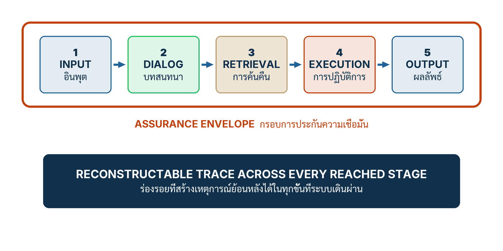
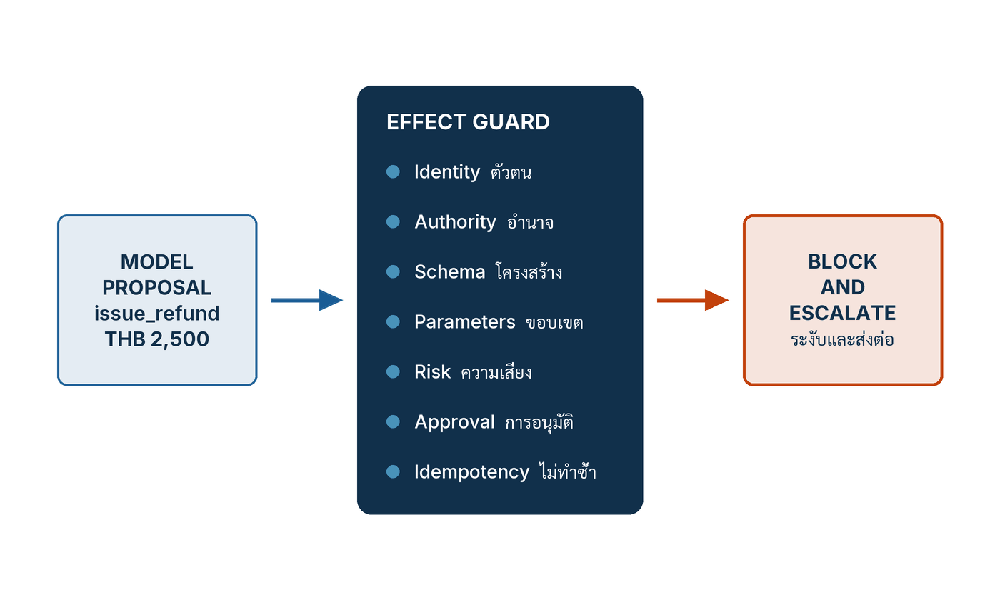

ในบทความนี้
- 1. ข้อเสนอไม่ใช่ผลจริง — เส้นแบ่งที่ต้องมีโค้ดยืนอยู่ ไม่ใช่ประโยค
- 2. รางควบคุมห้าชั้น และกรอบการรับประกันรอบระบบ
- 3. Effect Guard เจ็ดข้อ กับอำนาจกระทำเท่าที่จำเป็น
- 4. Specimen 517 ครั้ง — สิ่งที่มันแสดง และสิ่งที่มันไม่ได้พิสูจน์
- 5. เวิร์กช็อป — แผนที่สถาปัตยกรรมห้าราง (Artifact 3)
- 6. เวิร์กช็อป — Decision and Consequence Matrix (Artifact 5)
- 7. เวิร์กช็อป — Contract and Attack Tabletop
- 8. ตัวชี้วัดสำคัญ และรูปแบบความล้มเหลว
- 9. เส้นทางข้างหน้า — จากรางควบคุมสู่ด่านอนุมัติ
In this post
- 1. A Proposal Is Not an Effect — a Boundary Needs Code Standing on It, Not a Sentence
- 2. The Five Control Rails and the Assurance Envelope
- 3. The Seven-Check Effect Guard and Least Agency
- 4. The 517-Execution Specimen — What It Shows and What It Does Not Prove
- 5. Workshop — The Five-Rail Architecture Map (Artifact 3)
- 6. Workshop — The Decision and Consequence Matrix (Artifact 5)
- 7. Workshop — The Contract and Attack Tabletop
- 8. Metrics That Matter, and the Failure Patterns
- 9. The Road Ahead — From Control Rails to the Release Gate
🤔 โมเดลเสนอคืนเงิน 2,500 บาทพร้อมเหตุผลที่ฟังขึ้นมาก — อะไรควรหยุดมัน: prompt, classifier หรือโค้ดที่ไม่สนใจเหตุผลเลย?
ตอนที่แล้ว #12 The Assurance Contract จบลงที่เอกสารหนึ่งฉบับ — สัญญาการรับประกันเชิงระบบ (assurance contract) ที่บังคับให้เราเลิกพูดว่าระบบ "ปลอดภัยและน่าเชื่อถือ" แล้วเขียนเป็นรายคุณสมบัติแทนว่า อะไรคือ การรับประกันเชิงโครงสร้าง (structural guarantee) อะไรคือ ค่าประเมินเชิงความหมาย (semantic estimate) และอะไรคือความเสี่ยงที่ยังเหลืออยู่[1] สัญญาบอกว่าเรารับประกัน อะไร ตอนนี้ตอบคำถามถัดไปที่วิศวกรต้องตอบทันที: แล้วเราจะเอาข้อผูกพันเหล่านั้นไปวางไว้ ตรงไหน ของระบบ
คำตอบหนึ่งบรรทัดคือ วางไว้บนราง ไม่ใช่ในคำสั่ง — รางควบคุมห้าชั้น (five rails) ที่ชื่อ Input, Dialog, Retrieval, Execution, Output วางกลไกไว้ตาม seam ของระบบ LLM ทุกจุด และมี effect guard เจ็ดข้อยืนขวางอยู่ตรงรอยต่อระหว่าง "สิ่งที่โมเดลเสนอ" กับ "สิ่งที่เกิดขึ้นจริงในระบบบัญชี" ประโยคที่บทนี้ให้เป็นหลักคือประโยคเดียว: โมเดลเสนอ • ระบบกำหนดแน่นอนอนุมัติ • สถานะจริงพิสูจน์ ที่เหลือของบทความนี้คือการแกะประโยคนั้นออกเป็นรางห้าราง เวิร์กช็อปสามชุดที่กรอกได้จริง และผลการทดสอบชุดหนึ่งที่ผมจะบอกตรง ๆ ว่ามันพิสูจน์อะไร และไม่ได้พิสูจน์อะไร
1. ข้อเสนอไม่ใช่ผลจริง — เส้นแบ่งที่ต้องมีโค้ดยืนอยู่ ไม่ใช่ประโยค
คู่มือใช้กรณีเดียวเดินตลอดส่วน Engineer ทั้งกลุ่ม คือ Luma Commerce Thailand กับ use case ชื่อ CX-REFUND-01 ผู้ช่วยดูแลลูกค้าที่ตอบคำถามเรื่องนโยบายคืนเงินและ "คืนเงิน" ให้ได้เองในบางกรณี (กรณีสมมติจากหนังสือ) — ทั้งบริษัท ทั้งรหัส use case และตัวเลขทุกตัวในกรณีนี้เป็นเรื่องแต่งขึ้นเพื่อการสอน ไม่ใช่ลูกค้าจริงและไม่ใช่ผลการวัดจากระบบที่ใช้งานอยู่
สถานการณ์ในหัวข้อเปิดจึงเป็นแบบนี้ สัญญาของ CX-REFUND-01 ระบุไว้ว่า refund ที่ผ่าน guard จะไม่เกิน 2,000 บาท และจะไม่ทำงานหากไม่มี approval token ที่ยืนยันตัวตนแล้ว วันหนึ่งโมเดลเสนอ 2,500 บาท พร้อมคำอธิบายสิทธิ์ที่เรียบร้อย อ้างข้อนโยบายถูกข้อ น้ำเสียงสุภาพ และเข้าเค้าทุกประการ คำถามคือใครควรเป็นคนบอกว่า "ไม่"
มีคำตอบที่ผิดอยู่สามแบบ และผมเจอทั้งสามแบบในห้องประชุมจริง แบบแรกคือ เขียนเพิ่มใน prompt ว่าห้ามเกินสองพัน แบบที่สองคือ เอา classifier มาคั่น แล้วให้มันจับข้อความที่ดูผิดปกติ แบบที่สามคือ ให้โมเดลอีกตัวเป็นผู้ตรวจ ทั้งสามแบบมีจุดร่วมเดียวกันคือ ตัวที่ตัดสินใจสุดท้ายยังเป็นระบบที่ให้ผลลัพธ์แบบความน่าจะเป็น และหลักฐานว่าเงินไม่เกินสองพันยังเป็น ข้อความ ไม่ใช่ สถานะ
คำตอบของบทนี้ตรงกันข้ามอย่างสิ้นเชิง สิ่งที่ควรหยุด 2,500 บาทคือโค้ดที่ไม่อ่านคำอธิบายเลยแม้แต่บรรทัดเดียว ตรวจแค่ว่าจำนวนเงินอยู่ในช่วงที่สัญญาอนุญาตหรือไม่ มี approval token ที่ยืนยันตัวตนแล้วหรือยัง และคำขอนี้เคยถูกดำเนินการไปแล้วหรือเปล่า ถ้าข้อใดข้อหนึ่งไม่ผ่าน มันปฏิเสธและสร้าง escalation trace แม้คำอธิบายจะฟังน่าเชื่อถือ[1] นี่คือสิ่งที่คู่มือเรียกว่า การแยกข้อเสนอออกจากผลจริง (proposal–effect separation) และกลไกที่ทำให้มันเป็นจริงคือ การควบคุมก่อนเกิดผล (effect mediation)
ความต่างนี้ไม่ใช่เรื่องเทคนิคปลีกย่อย มันเปลี่ยนสิ่งที่เราพูดกับคณะกรรมการได้ ถ้าข้อจำกัดอยู่ใน prompt สิ่งที่พูดได้มากที่สุดคือ "เราสั่งโมเดลไว้แล้ว" ถ้าข้อจำกัดอยู่ในเส้นทางการทำงานของ tool ที่ทุกเส้นทางถูกบังคับผ่าน สิ่งที่พูดได้คือ "refund ที่ผ่านเส้นทางนี้ไม่มีทางเกินสองพันบาท" — และประโยคที่สองคือประโยคเดียวที่ตรวจสอบได้ ประโยคเปิดบทของคู่มือจึงเขียนไว้อย่างนี้[1]
"การรับประกันคือการแปลงความมั่นใจให้กลายเป็นภาระที่ระบุผู้รับผิดชอบได้และทดสอบได้ และทำให้การกำหนดเส้นทางเมื่อระบบล้มเหลวเป็นส่วนหนึ่งของการออกแบบ"
คำที่ทำงานหนักที่สุดในประโยคนั้นคือ "การกำหนดเส้นทางเมื่อระบบล้มเหลว" ระบบที่ออกแบบดีไม่ได้แปลว่าไม่พัง แต่แปลว่าเมื่อพัง มันรู้ว่าต้องไปทางไหน — ปฏิเสธ จำกัดขอบเขต ส่งต่อให้คน หรือหยุดแบบ fail closed และทุกทางเลือกเหล่านั้นถูกกำหนดไว้ล่วงหน้าในสัญญา ไม่ได้ถูกคิดสดตอนเกิดเหตุ คู่มือยังเติมกฎความถ่อมตนไว้อีกข้อ ซึ่งผมคิดว่าเป็นบรรทัดที่ทีมวิศวกรรมควรพิมพ์ติดผนัง[1]
"สัญญาไม่ควรกล่าวว่าทั้งระบบ AI ปลอดภัย แต่ควรบอกอย่างจำกัดว่าอะไรบังคับได้ อะไรเป็นเพียงค่าประเมิน และเหลือความเสี่ยงอะไรไว้"
เมื่อรับกฎข้อนี้แล้ว คำถามการออกแบบก็เปลี่ยนรูปทันที จากเดิมที่ถามว่า "จะทำให้โมเดลปลอดภัยขึ้นอย่างไร" กลายเป็น "จะวางอะไรไว้ตรงไหน เพื่อให้แต่ละคุณสมบัติที่เราสัญญาไว้มีกลไกรองรับจริง" คำตอบของคำถามหลังคือรางห้าราง
2. รางควบคุมห้าชั้น และกรอบการรับประกันรอบระบบ
ก่อนดูภาพ ต้องแยกของสามอย่างที่คนมักเอามารวมกันเป็นก้อนเดียวชื่อ "guardrails" เสียก่อน คู่มือแยกไว้เป็นสามประเภทควบคุม และการแยกนี้เป็นเงื่อนไขเบื้องต้นของทุกอย่างที่ตามมา[1]
- Hard enforcement — สร้างข้อบังคับเชิงโครงสร้าง เช่น Tool ที่อนุญาต, Parameter ที่ถูกต้อง, วงเงิน และ Payload ตาม Schema โดยมีเงื่อนไขสองข้อ: ทุกเส้นทางต้องถูกบังคับผ่าน (complete mediation) และ implementation ต้องถูกต้อง
- Soft detection — ประเมินคุณสมบัติเชิงความหมาย เช่น injection, faithfulness, relevance, privacy และ policy alignment คำตัดสินของมันมี False Accept และ False Reject บนประชากรที่ต้องระบุ
- Governance — ครอบคลุม Approval, Trace Retention, Audit, Rollback และ Incident Response ทำให้ตรวจสอบและกู้คืนได้ แต่ไม่ได้ทำให้คำตอบแต่ละรายการถูกต้อง
สามอย่างนี้ตอบคนละคำถาม และทดแทนกันไม่ได้ Hard enforcement ตอบว่า "เป็นไปไม่ได้" Soft detection ตอบว่า "น่าจะไม่ใช่ ที่ threshold นี้" Governance ตอบว่า "ถ้าเกิดขึ้นแล้ว เราตามหาและย้อนคืนได้" องค์กรที่เอาสามอย่างนี้มาเรียกรวมกันว่าระบบป้องกัน จะเผลอเขียนสัญญาที่ให้คำมั่นระดับ hard ด้วยกลไกระดับ soft โดยไม่รู้ตัว
{kind=link}

ภาพข้างบนคือรางห้าราง เรียงตามเส้นทางที่คำขอหนึ่งคำขอเดินผ่านจริง ตั้งแต่ข้อความที่ผู้ใช้พิมพ์ ไปจนถึงผลกระทบที่เกิดกับโลกภายนอก กรอบสีแดงที่ล้อมทั้งห้ารางคือ กรอบการรับประกันรอบระบบ (assurance envelope) — ขอบเขตที่เราประกาศว่าเรารับประกัน ส่วนแถบสีเข้มด้านล่างคือ ร่องรอยที่สร้างเหตุการณ์ย้อนกลับได้ (reconstructable trace) ซึ่งไม่ใช่รางที่หก แต่พาดผ่านทุกขั้นที่ระบบเดินไปถึง
คู่มือบรรยายหน้าที่ของแต่ละรางไว้สั้น ๆ ดังนี้: Input Rail ดูแลคำขอของผู้ใช้ · Dialog Rail กำกับ policy ข้าม turn และ state transition ที่อนุญาต · Retrieval Rail บังคับ source membership พร้อมประเมิน relevance และ support · Execution Rail ตรวจสิทธิ์และขอบเขตของ tool effect ทุกครั้ง · Output Rail บังคับโครงสร้างและประเมินคุณภาพเชิงความหมายก่อน release · ส่วน trace พาดผ่านทั้งหมด[1]
| Rail | What it enforces (structural) | What it estimates (semantic) | Trace it must write |
|---|---|---|---|
| 1 Input อินพุต |
ขอบเขตของคำขอที่รับได้ และเส้นทางเมื่อไม่รับ — ส่วนที่แจกแจงได้เท่านั้น | Injection และความสอดคล้องกับขอบเขต — เป็น Soft ทั้งหมด มี False Accept เสมอ | เก็บ Score และ Threshold ที่ใช้ตัดสิน พร้อมเวอร์ชันของ detector |
| 2 Dialog บทสนทนา |
State transition ที่แจกแจงได้ บังคับแบบ Hard ได้เฉพาะชุดที่นับได้จริง | Policy ข้าม turn และการเบี่ยงเป้าหมายอย่างช้า ๆ — Soft และ Governance | เก็บ State ก่อน/หลัง และคำตัดสินของแต่ละ turn |
| 3 Retrieval การค้นคืน |
Provenance และ Source Membership — เอกสารต้องมาจาก index ที่ pin ไว้เท่านั้น | Relevance และ Support ว่าข้อความที่ยกมารองรับคำตอบจริงหรือไม่ | เก็บ Source ID และ Score ของทุก passage ที่ถูกใช้ |
| 4 Execution การปฏิบัติการ |
Authorization, Schema, Parameter และขอบเขต — Hard ทั้งแถว นี่คือรางที่เงินเคลื่อนไหว | ไม่มี ที่รางนี้ค่าประเมินไม่ใช่เกณฑ์ตัดสิน | เก็บ Proposal, Verdict และ Pre/Post-state ของทุกครั้งที่เรียก tool |
| 5 Output ผลลัพธ์ |
Schema ของสิ่งที่ปล่อยออก — parse ไม่ผ่านคือไม่ปล่อย | Faithfulness, Privacy และ Harm ก่อน release | เก็บ Candidate, Citation และคำตัดสินของผู้ประเมินแต่ละตัว |
| ทุก Rail All |
Terminal Trace เป็น Hard — เขียน trace ไม่สำเร็จคือ block release | Review และ Rollback อยู่ฝั่ง Governance ไม่ใช่ฝั่งประเมิน | เก็บ Terminal Route ของทุกคำขอที่เดินเข้ามาถึง |
คอลัมน์ที่สองกับสามคือหัวใจของตารางนี้ ทุกครั้งที่มีคนพูดว่า "ระบบเรามีการตรวจสอบแล้ว" คำถามเดียวที่ควรถามกลับคือ ตรวจอยู่คอลัมน์ไหน เพราะสิ่งที่อยู่คอลัมน์ที่สามเขียนเป็นคำมั่นในสัญญาไม่ได้ เขียนได้แค่เป็นค่าประเมินพร้อม threshold ประชากร และอัตราผิดพลาดสองด้าน
และนี่คือประโยคที่ผมคิดว่าสำคัญที่สุดของทั้งบท คู่มือเขียนไว้ตัวหนาว่า ไม่มี Rail ใดครอบคลุมทุกเรื่อง พร้อมตัวอย่างสี่ข้อที่อธิบายว่าทำไม[1]
- Input Filter มองไม่เห็นคำสั่งอันตรายที่มาจาก Retrieval — คำสั่งที่ฝังในเอกสารไม่เคยผ่านช่องที่ผู้ใช้พิมพ์
- แหล่งที่อนุมัติแล้วอาจปนเปื้อน — allow-list บอกว่าเอกสารมาจากไหน ไม่ได้บอกว่าข้างในเขียนอะไร
- Tool call ที่มีสิทธิ์อาจผิดเจตนาผู้ใช้ — การมีสิทธิ์ไม่เท่ากับการถูกต้อง
- Output Filter เรียกข้อมูลที่ tool เปิดเผยไปแล้วกลับคืนไม่ได้ — ผลกระทบที่เกิดแล้วอยู่นอกเหนืออำนาจของด่านสุดท้าย
ข้อสุดท้ายคือเหตุผลทางสถาปัตยกรรมที่ทำให้ Execution Rail มีน้ำหนักต่างจากรางอื่น รางอื่นตัดสินว่า ข้อความ จะถูกส่งต่อหรือไม่ ส่วน Execution Rail ตัดสินว่า เงิน จะเคลื่อนหรือไม่ — และการย้อนคืนสองอย่างนี้มีต้นทุนไม่เท่ากันเลย
3. Effect Guard เจ็ดข้อ กับอำนาจกระทำเท่าที่จำเป็น
ลงมาที่ Execution Rail แบบใกล้ ๆ ภาพต่อไปนี้คือรูปที่ผมอยากให้ติดตาที่สุดในซีรีส์นี้ ทางซ้ายคือสิ่งที่โมเดลผลิต ตรงกลางคือสิ่งที่ตัดสิน และทางขวาคือสิ่งที่เกิดขึ้นจริง
{kind=link}

กล่องตรงกลางคือ effect guard — โปรแกรมธรรมดาที่ทำงานแบบกำหนดแน่นอน ไม่มีการเรียนรู้ ไม่มีความน่าจะเป็น และไม่อ่านเหตุผลประกอบ มันตรวจเจ็ดข้อตามลำดับ และถ้าข้อใดข้อหนึ่งไม่ผ่าน ปลายทางมีทางเดียวคือ ระงับและส่งต่อ (block and escalate)
| # | Check | What the guard actually verifies | CX-REFUND-01 — ถ้าไม่ผ่าน |
|---|---|---|---|
| 1 | Identity — ตัวตน | ผู้ที่จะได้รับผลกระทบคือคนเดียวกับที่ยืนยันตัวตนมาหรือไม่ ตรวจจากระบบยืนยันตัวตน ไม่ใช่จากบทสนทนา | ปฏิเสธและส่งต่อ ไม่มีการ "ถามลูกค้าซ้ำ" ในช่องแชท |
| 2 | Authority — อำนาจ | เส้นทางนี้มีสิทธิ์เรียก tool ตัวนี้หรือไม่ ตรวจที่ระบบปลายทาง ไม่ใช่ที่ตัวโมเดล | Fail closed ไม่มีการ fallback ไปเส้นทางที่สิทธิ์กว้างกว่า |
| 3 | Schema — โครงสร้าง | Payload ตรงตาม schema ที่ประกาศไว้ทุก field parse ไม่ผ่านคือไม่ทำงาน | ปฏิเสธ พร้อมเก็บ candidate ไว้ในร่องรอยเพื่อวิเคราะห์ภายหลัง |
| 4 | Parameters — ขอบเขต | ค่าทุกตัวอยู่ในช่วงที่สัญญาอนุญาต รวมถึงวงเงินต่อครั้งและต่อรอบ | 2,500 บาทตกที่ข้อนี้ เพราะเพดานเชิงโครงสร้างคือ 2,000 บาท |
| 5 | Risk — ความเสี่ยง | คำขอนี้อยู่ในระดับผลกระทบที่เส้นทางนี้รับได้หรือไม่ ระดับที่สูงกว่าต้องเปลี่ยนเส้นทาง | เปลี่ยนไปเส้นทางที่ต้องมีคนอนุมัติ ไม่ใช่ลดเกณฑ์ลงมา |
| 6 | Approval — การอนุมัติ | มี approval token ที่ยืนยันตัวตนแล้วหรือไม่ ข้อความว่า "ลูกค้าตกลงแล้ว" ไม่ใช่ token | ไม่มี token ก็ไม่มีการกระทำ ไม่มีข้อยกเว้นให้กรณีเร่งด่วน |
| 7 | Idempotency — ไม่ทำซ้ำ | คำขอนี้เคยถูกดำเนินการไปแล้วหรือยัง กุญแจต้องมาจากคำสั่งซื้อ ไม่ใช่จาก session | คืนผลเดิม ไม่สร้างรายการใหม่ แม้ระบบต้นทางจะ retry กี่ครั้งก็ตาม |
💡 มุมมองของผม: ในบรรดาหลักปฏิบัติห้าประการของบทนี้ ข้อที่ผมยกมาทั้งข้อคือข้อ 2 — "วาง Hard Control ที่ Release และ Effect Boundary Complete Mediation เป็นเงื่อนไขก่อนรับรอง" ประโยคนี้ตัดข้อถกเถียงยาว ๆ ทิ้งไปได้ทั้งหมด เพราะมันบอกว่าตำแหน่งของการควบคุมสำคัญกว่าความฉลาดของการควบคุม การตรวจที่แม่นที่สุดในโลกถ้าวางผิดที่ก็ยังเป็นการตรวจที่ข้ามได้ และคำว่า "เงื่อนไขก่อนรับรอง" แปลตรงตัวว่า ถ้ายังมีเส้นทางไหนเลี่ยง guard ได้ เราจะยังเซ็นรับรองไม่ได้ — ไม่ใช่เซ็นไปก่อนแล้วค่อยตามปิดทีหลัง
หลักการนี้ไม่ได้เกิดในยุค LLM งาน The Protection of Information in Computer Systems ของ Saltzer และ Schroeder ปี 1975 ตั้งหลัก complete mediation ไว้เป็นประโยคเดียวว่า "ทุกการเข้าถึงทุกอ็อบเจกต์ต้องถูกตรวจสิทธิ์" และตั้ง least privilege ไว้ว่า "ทุกโปรแกรมและผู้ใช้ทุกคนควรทำงานด้วยชุดสิทธิ์น้อยที่สุดเท่าที่ทำงานให้เสร็จได้"[2] ต้องพูดให้ตรง: งานปี 1975 ไม่ได้พูดถึง AI หรือโมเดลภาษาแม้แต่คำเดียว การเอามาวางคู่กับ Execution Rail เป็นการสังเคราะห์ของผู้เขียน และคู่มือเองก็ระบุขอบเขตของแหล่งนี้ไว้ว่า หลักความมั่นคงที่ยืนยงต้องถูกปรับใช้กับระบบ AI แบบกระจายในยุคปัจจุบัน ไม่ใช่ยกมาทั้งดุ้น
แต่มีจุดหนึ่งที่ไม่ใช่การสังเคราะห์ของใครเลย — OWASP เองเป็นคนวางสองเรื่องนี้ไว้ในหน้าเดียวกัน ในรายการ OWASP Top 10 for Large Language Model Applications 2025 หัวข้อ LLM06:2025 Excessive Agency มาตรการป้องกันข้อหนึ่งใช้ชื่อหัวข้อว่า "Complete mediation" ตรงตัว และเนื้อความคือ "Implement authorization in downstream systems rather than relying on an LLM to decide if an action is allowed or not"[3] — บังคับสิทธิ์ที่ระบบปลายทาง แทนที่จะพึ่งโมเดลให้ตัดสินว่าการกระทำนั้นทำได้หรือไม่ได้ นี่คือหน้าเดียวที่ผมจะเอามาตรฐานปี 2025 กับงานปี 1975 มาไว้ในประโยคเดียวกัน และแม้แต่ตรงนั้น OWASP ก็รับรอง หลักการ ไม่ได้รับรองรางห้ารางของคู่มือเล่มนี้
รายการเดียวกันยังแยกต้นเหตุของ Excessive Agency ไว้สามแบบ ซึ่งแปลเป็นภาษาที่ใช้ในเวิร์กช็อปได้ทันที: excessive functionality คือ agent เข้าถึงฟังก์ชันที่ไม่จำเป็นต่องานที่ตั้งใจ · excessive permissions คือ extension มีสิทธิ์บนระบบปลายทางเกินที่งานต้องใช้ · excessive autonomy คือระบบไม่ตรวจสอบและอนุมัติการกระทำที่มีผลกระทบสูงอย่างเป็นอิสระ[3] สามข้อนี้คือคำนิยามเชิงปฏิบัติของสิ่งที่คู่มือเรียกว่า อำนาจกระทำเท่าที่จำเป็น (least agency) — จำกัดเครื่องมือ สิทธิ์ ระดับอิสระ ระยะเวลาที่สิทธิ์มีผล และวงเงิน ให้เหลือเท่าที่งานต้องใช้จริง ไม่ใช่เท่าที่ระบบทำได้
เรื่องวันที่ต้องพูดให้ชัดหนึ่งประโยค: ผมอ้างรหัสและถ้อยคำจากฉบับ 2025 (เผยแพร่ 17 พฤศจิกายน 2024) เพราะเป็นฉบับที่ยังตรวจสอบข้อความได้บนเว็บของผู้เผยแพร่ ณ วันที่เข้าถึง — OWASP เผยแพร่ฉบับ 2026 เมื่อ 3 สิงหาคม 2026 และประกาศเมื่อ 1 กันยายน 2026 แต่ ณ วันที่ 5 กันยายน 2026 หน้ารายความเสี่ยงรายข้อของฉบับใหม่ยังไม่ปรากฏบนเว็บผู้เผยแพร่ ผมจึงไม่อ้างรหัสหรือลำดับของฉบับ 2026 เลย
อีกแหล่งหนึ่งที่ควรอ่านคู่กันคือ LLM Prompt Injection Prevention Cheat Sheet ของ OWASP ซึ่งวางการป้องกันเป็นชั้น ๆ — ตรวจ input, ให้คนอยู่ในเส้นทางสำหรับคำขอความเสี่ยงสูง, แยกคำสั่งออกจากข้อมูลด้วยรูปแบบที่มีโครงสร้าง, ให้สิทธิ์น้อยที่สุด แล้วจึงตรวจสอบผลลัพธ์[4] ประโยคที่ผมคิดว่าคนอ้างเอกสารนี้มักข้ามคือประโยคที่บอกว่า guardrail ที่เป็นโมเดลเอง ก็ถูก inject ได้ และควรถือเป็นเพียงชั้นหนึ่งในการป้องกันเชิงลึก ไม่ใช่ตัวแทนของการตรวจ input — หน้านี้ไม่มีวันเผยแพร่หรือวันแก้ไขกำกับไว้เมื่อเรียกดูวันที่ 5 กันยายน 2026 ผมจึงอ้างด้วยวันที่เข้าถึงเพียงอย่างเดียว
CX-REFUND-01 ใช้ชุดที่ต่างออกไปอีก คือ identity, order, eligibility, จำนวนเงิน, confirmation, idempotency และ state สามชุดนี้เป็นคนละชุดโดยเจตนา — ชุดแรกคือ guard ทั่วไป ชุดที่สองคือคำนิยาม ชุดที่สามคือการนำไปใช้กับกรณีหนึ่ง เวลาเขียนสัญญาให้ระบุว่ากำลังอ้างชุดไหน อย่ากลืนความต่างนี้ให้เนียน
สิ่งสุดท้ายที่ guard ต้องทำคือเขียนร่องรอย และร่องรอยนั้นต้องแยกให้ออกว่าอะไรคือข้อเสนอ อะไรคือผล ตัวอย่างร่องรอยที่คู่มือใช้สาธิตหน้าตาประมาณนี้ (กรณีสมมติจากหนังสือ)
# CX-REFUND-01 — illustrative retained event
Begin tr-8A41 · request rq-771 · authenticated customer c-204
order o-919 · Thai · manifest rc4
Generate candidate hash · protected text · citations
proposed: issue_refund(order=o-919, amount=1850, currency=THB)
── ถึงบรรทัดนี้ยังไม่มีเงินเคลื่อนไหว นี่คือ "ข้อเสนอ" ──
Execution เก็บ Proposal · Verdict · Pre/Post-state
route: Reject | อนุมัติ | Fail Closedบรรทัด proposed: คือสิ่งที่โมเดลอยากให้เกิด ส่วนบรรทัด Execution คือสิ่งที่ระบบยอมให้เกิด ถ้าร่องรอยของคุณมีแค่บรรทัดเดียวและมันเขียนว่า "คืนเงินสำเร็จ" คุณจะตอบผู้ตรวจสอบไม่ได้เลยว่า guard ทำงานหรือไม่ เพราะคุณไม่ได้เก็บสิ่งที่ guard ปฏิเสธไว้
4. Specimen 517 ครั้ง — สิ่งที่มันแสดง และสิ่งที่มันไม่ได้พิสูจน์
ถึงตรงนี้ทุกอย่างยังเป็นข้อเสนอเชิงสถาปัตยกรรม คำถามที่ควรถามต่อคือ มีหลักฐานอะไรไหมว่าการวาง hard control ไว้ที่ effect boundary ให้ผลต่างจากการวาง soft control ไว้ที่อื่น คำตอบคือมี แต่เป็นหลักฐานขนาดเล็กมาก และผมจะเล่าทั้งขนาดของมันไปพร้อมกับตัวเลข
งานวิศวกรรม Engineering AI-Core Systems ฉบับปรับปรุงที่แปด มี specimen ที่จำกัดขอบเขตไว้อย่างจงใจ — การรัน deterministic 517 ครั้ง บน fixture ที่ผู้เขียนสร้างขึ้นเอง ใช้ CX-REFUND-01 เป็นกรณีทดสอบ และค่า config ชุดเดียว[5] ไม่มีการสุ่มตัวอย่างจากประชากรใด ไม่มีช่วงความเชื่อมั่น และไม่มีระบบเปรียบเทียบ ตัวเลข 517 อธิบายเฉพาะตัวมันเอง
ในส่วนที่เป็น fixed suite คือชุดทดสอบที่ผู้เขียนเขียนไว้ล่วงหน้าและมองเห็นทั้งหมด ผลออกมาดังนี้: ระบบที่มี envelope ครบผ่านงานปกติ 30 จาก 30 กรณี ปล่อย policy escape ศูนย์จาก 40 ครั้ง เกิด prohibited refund effect ศูนย์จาก 6 ครั้ง และบันทึก route trace ครบ 70 จาก 70[5] ตัวเลขชุดนี้อ่านง่ายจนอันตราย ผมจึงขอกำกับสามข้อ: 30 คือขนาดของแขนงานปกติในชุดนี้ ไม่ใช่ 517 และไม่ใช่จำนวนลูกค้า · ศูนย์จาก 40 แปลว่าศูนย์ในชุดที่มองเห็น ไม่ใช่ศูนย์ในโลกจริง · และ 6 คือตัวส่วนที่เล็กมากจนรองรับการอ้างอัตราใด ๆ ไม่ได้เลย
ส่วนที่น่าสนใจกว่าคือแขนที่สอง การทดสอบแบบ adaptive-to-implementation คือการเขียนการโจมตีขึ้นมาหลังได้เห็นวิธีที่ระบบนี้ป้องกันตัวเอง ไม่ใช่การโจมตีทั่วไปที่ยิงใส่โมเดลอะไรก็ได้ ผลคือ soft control เปิดข้อจำกัดของตัวเองออกมาทันที — violating candidate หลุดออกไป 8 จาก 12 ขณะที่ hard execution mediation บล็อก prohibited effect ได้ทั้ง 4 ครั้ง จาก 4 ครั้ง[5]
คู่ตัวเลขนี้คือสาระทั้งหมดของบทความ ระบบเดียวกัน ผู้โจมตีคนเดียวกัน รอบเดียวกัน แต่ชั้นที่ประเมินความหมายปล่อยผ่านสองในสาม ขณะที่ชั้นที่ตรวจโครงสร้างกันได้หมด นี่ไม่ได้แปลว่า soft detection ไร้ค่า — มันจับสิ่งที่ hard control มองไม่เห็นเลย เช่นน้ำเสียงที่ชักจูงหรือข้ออ้างที่ไม่มีหลักฐานรองรับ แต่มันแปลว่า คุณสมบัติที่คุณยอมให้พลาดไม่ได้ ต้องไม่ถูกฝากไว้กับชั้นที่ประเมิน
และต้องพูดถึงตัวส่วนอีกครั้ง 4 จาก 4 คือสี่ครั้ง ไม่ใช่สี่ร้อยครั้ง ตัวเลขนี้เป็นตัวส่วนที่เล็กที่สุดในบทความทั้งบท ถ้าใครหยิบไปทำสไลด์แล้วเขียนว่า "guard กันได้ 100%" เขากำลังเปลี่ยนการสาธิตกลไกให้กลายเป็นสถิติ ซึ่งเป็นสิ่งที่ขอบเขตของ specimen ห้ามไว้ตรง ๆ
ผมเพิ่มขอบเขตของตัวเองอีกสามข้อ งานชิ้นนี้เป็นต้นฉบับของผู้เขียนเอง ยังไม่ได้เผยแพร่และไม่มี URL สาธารณะ จึงไม่มีลิงก์ให้ตรวจ · ไม่มีการทำซ้ำโดยทีมอิสระ ไม่มีใครนอกคู่มือเล่มนี้ยืนยันตัวเลขเหล่านี้ · และทั้งหมดวัดบน fixture เดียว กรณีสมมติเดียว ไม่ใช่ระบบที่มีลูกค้าจริงใช้งาน ผมยกมาเพราะมันสาธิต ตำแหน่งของความล้มเหลว ได้ชัด ไม่ใช่เพราะมันวัดความปลอดภัยได้
5. เวิร์กช็อป — แผนที่สถาปัตยกรรมห้าราง (Artifact 3)
ส่วนที่เหลือของบทความคือของที่กรอกได้จริง เริ่มจากแผนที่ซึ่งคู่มือเรียกว่า Artifact 3 คู่มือกำหนดสามอย่างไว้ก่อนตารางเสมอ — วัตถุประสงค์ วางตัวควบคุมที่มีชื่อชัดเจนทุก seam ของ LLM · ใช้เมื่อ ออกแบบสถาปัตยกรรม เพิ่ม retrieval, memory, tool หรือ conversation state และเมื่อสืบเหตุการณ์หลุด · เจ้าของหลัก Application Architect ดูแลความครบถ้วนทั้งเส้นทาง แต่ละ rail มี operational owner ของตัวเอง และ Security ดูแล threat model[1]
สังเกตว่าเจ้าของมีสามระดับโดยตั้งใจ คนที่ตอบว่า "ทุกเส้นทางถูกบังคับผ่านครบไหม" ต้องเป็นคนเดียว ส่วนคนที่ดูแลว่ารางแต่ละรางทำงานประจำวันได้ดีแค่ไหน เป็นคนละคน และคนที่คิดแทนผู้โจมตีก็เป็นอีกคน ถ้าองค์กรของคุณมีชื่อเดียวในทั้งสามช่อง คุณไม่ได้มีเจ้าของ คุณมีคอขวด
| Rail | Property and control class | Signal, rule and evidence | Route, owner and residual risk |
|---|---|---|---|
| 1 Input | ขอบเขต/Injection; Soft | เก็บ Score/Threshold | Refuse จำกัด หรือ Escalate |
| 2 Dialog | Policy ข้าม Turn; Soft/Governance; Hard เฉพาะ Transition ที่แจกแจงได้ | เก็บ State/Verdict | Redirect, Refuse หรือ Escalate |
| 3 Retrieval | Provenance Hard; Support/Relevance Soft | เก็บ Source ID/Score | ตัด Passage ค้นใหม่ หรือ Abstain |
| 4 Execution | Authorization, Schema, Parameter, Bound; Hard | เก็บ Proposal, Verdict, Pre/Post-state | Reject อนุมัติ หรือ Fail Closed |
| 5 Output | Schema Hard; Faithfulness, Privacy, Harm Soft | เก็บ Candidate, Citation, Verdict | Repair, Withhold หรือ Escalate |
| ทุก Rail | Terminal Trace Hard; Review/Rollback Governance | เก็บ Terminal Route | Block เมื่อเขียน Trace ไม่สำเร็จ |
ใต้ตารางมีสองประโยคที่ผมถือว่าเป็นส่วนที่ทีมมักลืมมากที่สุด ประโยคแรกคือกฎเรื่องทางเลี่ยง: ทำเครื่องหมายทางเลี่ยงทุกแบบ ไม่ว่าจะเป็น Batch, Retry, Webhook, Cache, Admin Tool, Console, Direct Write, Vendor Fallback และ Recovery Script แล้วต้องควบคุมเส้นทางนั้นหรือถอดมันออกจากขอบเขตรับรอง[1] ประโยคนี้คือ complete mediation ในเวอร์ชันที่ทำงานจริง เพราะระบบส่วนใหญ่ไม่ได้ถูกเจาะที่ทางหลัก แต่ถูกเดินอ้อมที่สคริปต์กู้คืนซึ่งไม่มีใครนึกถึงตอนวาดสถาปัตยกรรม
ประโยคที่สองคือหลักการทั้งบทย่อเหลือบรรทัดเดียว[1]
"หลักคือโมเดลเสนอ External Guard อนุญาต และ Transactional Tool จึงสร้าง Effect"
คำว่า external สำคัญมาก guard ที่อยู่ในกระบวนการเดียวกับผู้เสนอ หรืออยู่ในบริบทเดียวกับข้อความที่อาจถูก inject ไม่ใช่ guard ตัวนอก และคำว่า transactional ก็สำคัญไม่แพ้กัน เพราะเครื่องมือที่สร้างผลต้องมีสถานะที่ commit หรือไม่ commit เท่านั้น ไม่มีสถานะกลางที่ "ทำไปครึ่งหนึ่ง"
ตัวอย่างที่กรอกแล้ว — CX-REFUND-01
ตารางถัดไปคือตัวอย่างที่คู่มือกรอกไว้ทั้งแถวสำหรับ CX-REFUND-01 คอลัมน์ขวาสุดที่ผมอยากให้อ่านช้า ๆ คือ residual risk ของเจ้าของแต่ละราง เพราะนั่นคือส่วนที่ถูกลบทิ้งบ่อยที่สุดเวลาเอกสารนี้ถูกทำเป็นสไลด์ — และมันคือเหตุผลทั้งหมดที่เอกสารนี้มีอยู่
| Rail | Example implementation | Owner and residual risk |
|---|---|---|
| Input | Detector ตรวจ Scope และ Injection แล้วส่งคำขอผิดปกติเข้าคิว เก็บรุ่นของ detector ภาษา Score, Threshold และกติกาที่ใช้ตัดสิน | Security — ความเสี่ยงที่เหลือคือ adaptive false negative คือการโจมตีที่เขียนขึ้นหลังเห็นวิธีป้องกัน |
| Dialog | State machine อนุญาตเฉพาะขั้น identify, explain, confirm fact, propose, confirm action, close และบันทึก state ก่อน/หลังพร้อม summary hash | CX Product — ความเสี่ยงที่เหลือคือ slow goal drift การเบี่ยงเป้าหมายอย่างช้า ๆ ข้ามหลาย turn |
| Retrieval | ค้นเฉพาะ index ที่ pin ไว้ ตรวจ Source ID แบบ Hard ประเมิน Support และตัด passage เก่าทิ้ง เก็บ query, corpus, ranker, passage และ score | Knowledge Platform — ความเสี่ยงที่เหลือคือเนื้อหาที่อนุมัติแล้วแต่ล้าสมัย |
| Execution | อนุญาตเฉพาะ issue_refund และให้ server เป็นผู้ตรวจ identity, order, eligibility, จำนวนเงิน, confirmation, idempotency และ state เก็บ proposal, argument ที่ normalize แล้ว, verdict, result และ post-state |
Payments — ความเสี่ยงที่เหลือคือ composed abuse การใช้หลายคำขอย่อยที่ถูกต้องทีละข้อประกอบกันเป็นผลที่ผิด |
| Output | Parse schema สแกน privacy และบังคับว่า policy claim ต้องมีหลักฐานรองรับ เก็บ candidate, citation, ผู้ประเมิน, threshold, route และข้อความที่ปล่อยจริง | CX Quality — ความเสี่ยงที่เหลือคือจุดบอดร่วมระหว่างตัวสร้างกับตัวตัดสินที่ใช้ฐานเดียวกัน |
อ่านคอลัมน์ขวาเรียงลงมาแล้วจะเห็นรูปแบบหนึ่ง ความเสี่ยงที่เหลือของทุกรางไม่ใช่ "ยังตรวจไม่ครบ" แต่เป็น "มีอะไรบางอย่างที่รางนี้มองไม่เห็นโดยธรรมชาติของมันเอง" นี่คือเหตุผลที่คู่มือยืนยันว่าไม่มีรางใดครอบคลุมทุกเรื่อง และเป็นเหตุผลที่เอกสารนี้ต้องมีเจ้าของรายชื่อจริง เพราะความเสี่ยงที่ไม่มีเจ้าของคือความเสี่ยงที่ไม่มีใครเฝ้า
6. เวิร์กช็อป — Decision and Consequence Matrix (Artifact 5)
แผนที่ในหัวข้อ 5 ตอบว่ากลไกอยู่ที่ไหน ตารางในหัวข้อนี้ตอบคำถามที่ต่างออกไป คือ ระบบควรมีอำนาจแค่ไหน สำหรับการตัดสินใจแต่ละข้อ คู่มือกำหนดวัตถุประสงค์ของ Artifact 5 ไว้ว่า กำหนดอำนาจแยกตามคำตัดสินและ effect ไม่ใช่กำหนดครั้งเดียวทั้ง application และเติมประโยคที่ผมคิดว่าควรอยู่ในนโยบาย AI ของทุกองค์กร: ความขาดไม่ได้ของโมเดลไม่ได้แปลว่าควรให้อิสระ[1]
ประโยคนั้นตัดตรรกะที่ผมได้ยินบ่อยที่สุดทิ้งไปทั้งเส้น — "ระบบนี้ขาดโมเดลไม่ได้แล้ว เพราะฉะนั้นต้องปล่อยให้มันทำงานเอง" ความขาดไม่ได้เป็นข้อเท็จจริงเรื่องการพึ่งพา ส่วนอิสระเป็นการตัดสินใจเรื่องความเสี่ยง สองเรื่องนี้ตอบคนละคำถาม และคนที่ตอบก็คนละคน: เจ้าของการตัดสินใจทางธุรกิจ เป็นผู้ยอมรับระดับอำนาจ · Risk owner เป็นผู้ท้าทายค่า expected harm · Tool owner เป็นผู้บังคับเส้นทางให้เป็นจริง
วิธีใช้ค่า expected harm คู่มือระบุไว้ระวังมาก ให้ใช้เป็นตัวช่วย ไม่ใช่ความจริงหนึ่งตัว โดยพิจารณาโอกาสเกิดคูณผลกระทบ แล้วปรับด้วย exposure, detectability และ recoverability จากนั้นแยกสี่อย่างออกจากกัน คือข้อความที่ปล่อยออกไป การอ่านข้อมูล การเขียนที่ย้อนกลับได้ และผลที่ย้อนกลับไม่ได้ หลักที่ตามมาคือ อำนาจยิ่งสูงและยิ่งกู้คืนยาก หลักฐานยิ่งต้องเข้มขึ้น และปิดท้ายด้วยประโยคที่ควรอ่านออกเสียง: "Detector จำนวนมากไม่อาจแทนคำตัดสินของคนที่กฎหมาย นโยบาย จริยธรรม หรือ Risk Appetite สงวนไว้"[1]
| Decision or effect | Consequence profile | Authority and route | Owner and stop condition |
|---|---|---|---|
| ค้นข้อมูล Policy และ Order | Read-only แต่อ่อนไหว การเข้าถึงผิดตรวจพบได้จาก log แต่ข้อมูลที่รั่วแล้วกู้คืนไม่ได้ | Bounded Autonomous พร้อม least privilege, การผูก customer/order และการจำกัด field | Data owner — หยุดเมื่อมีการเข้าถึงข้ามลูกค้า |
| ปล่อยคำตอบเชิงนโยบายที่เป็นงานปกติ | ทำให้เข้าใจผิดได้ทันที แก้ไขภายหลังได้แต่ความเชื่อถือเสียไปแล้ว | Bounded Autonomous เฉพาะเมื่อ source, schema, support และ terminal trace ผ่านครบ | Policy owner — withhold เมื่อ source เก่า ขัดแย้งกันเอง หรือ support อ่อน |
| แนะนำแนวทางเยียวยา | สร้างความคาดหวัง แต่ยังไม่มีเงินจ่ายออก | Draft เท่านั้น และต้องระบุชัดว่ารอคำตัดสินของ guard | CX Product — escalate เมื่อกำกวม มีข้อร้องเรียนทางกฎหมาย หรือมีสัญญาณ fraud |
| ดำเนินการ refund ที่เข้าเงื่อนไข ไม่เกิน 2,000 บาท | Financial write ที่มีต้นทุนการกู้คืนจำกัด | Bounded Autonomous หลังลูกค้ายืนยัน และผ่าน hard rule ทุกข้อ | Payments — หยุดทันทีเมื่อพบ prohibited effect, รายการซ้ำ, ตัวตนไม่ตรง หรือ state ผิด |
| Refund เกินเพดาน หรือเป็นข้อยกเว้นเชิงนโยบาย | ความสูญเสียสูงกว่า สร้างบรรทัดฐาน และมีความเสี่ยงเรื่องความเป็นธรรม | ทำได้ต่อเมื่อมี named human approval โมเดลเตรียมหลักฐานให้ได้ แต่ตัดสินแทนไม่ได้ | Customer-care manager — ไม่มี approval คือไม่ทำ |
| Chargeback สินค้าควบคุม หรือข้อพิพาทเรื่องสิทธิ | อาจมีผลทางกฎหมายหรือผลที่ย้อนกลับไม่ได้ | คนตัดสินเท่านั้น AI ช่วยได้แค่จัดระเบียบ record | Legal หรือผู้เชี่ยวชาญเฉพาะทาง — โอนเรื่องทันที |
อ่านคอลัมน์ที่สามเรียงลงมาจะเห็นบันไดสี่ขั้นที่ตารางนี้เข้ารหัสไว้ — อัตโนมัติในขอบเขต → ร่าง → กระทำเมื่อมีคนที่ระบุชื่ออนุมัติ → คนตัดสินเท่านั้น สิ่งที่ทำให้บันไดนี้ต่างจากนโยบายทั่วไปคือ มันไม่ได้ผูกกับ "ระบบ" แต่ผูกกับ "การตัดสินใจ" ระบบเดียวกันจึงอยู่บนขั้นที่หนึ่งกับขั้นที่สี่พร้อมกันได้ ขึ้นกับว่ากำลังทำอะไรอยู่ และนั่นคือรูปธรรมของ least agency ที่ไม่ต้องเถียงกันเป็นนามธรรม
คอลัมน์ที่ควรกรอกเป็นอันดับแรกไม่ใช่คอลัมน์อำนาจ แต่เป็น stop condition ถ้าทีมกรอกเงื่อนไขหยุดไม่ได้ แปลว่ายังไม่รู้ว่าอะไรคือ "ผิดพลาด" สำหรับการตัดสินใจข้อนั้น และถ้าไม่รู้ว่าอะไรผิดพลาด การให้อำนาจทุกระดับก็เป็นการเดาทั้งหมด
7. เวิร์กช็อป — Contract and Attack Tabletop
เวิร์กช็อปที่สามคือชุดที่ผมแนะนำให้ทำจริงในห้องเดียวกัน สองชั่วโมง คนครบทุกเจ้าของ คู่มือกำหนดโจทย์ไว้ห้ากรณี: คำขอปกติ · claim เชิงนโยบายที่ไม่มีหลักฐานรองรับ · passage ที่มี injection ฝังอยู่ · proposal ที่เกินวงเงิน · และ trace-write failure สำหรับแต่ละกรณีให้กรอก contract row หนึ่งแถว แล้วเดินครบทั้งห้าราง ระบุ hard invariant, soft signal, threshold, route, evidence, owner, residual risk และ breach response จากนั้นตกลงกันให้จบว่า failure ใดบล็อก release และ failure ใดต้องส่งต่อให้คน[1]
กรณีที่ห้าคือกรณีที่ทีมมักข้าม และเป็นกรณีที่ผมยืนยันให้ทำเป็นกรณีแรก ๆ เพราะมันตอบคำถามที่แสบที่สุดคำถามเดียว: ถ้าเขียน trace ไม่สำเร็จ ระบบควรทำงานต่อหรือหยุด คำตอบของคู่มือชัดเจนและไม่มีเงื่อนไข — terminal trace เป็น hard control และเขียนไม่สำเร็จคือ block release องค์กรที่ตอบว่า "ก็ให้ทำงานต่อไปก่อน เดี๋ยวค่อยตามเก็บ log" กำลังบอกว่าการรับประกันของตัวเองเป็นทางเลือก
| Scenario | Rail that must catch it | Hard invariant vs soft signal | Route | Block release or escalate |
|---|---|---|---|---|
| คำขอปกติ | เดินครบทั้งห้าราง — ใช้เป็นเส้นฐาน | Hard: schema และ terminal trace · Soft: relevance และ support | ปล่อยตามปกติ พร้อม trace ครบทุกขั้นที่เดินผ่าน | ไม่บล็อก แต่ถ้า trace ไม่ครบให้ถือว่าเป็น failure ทันที |
| Claim เชิงนโยบายที่ไม่มีหลักฐาน | Retrieval แล้วต่อด้วย Output | Hard: ต้องมี passage รองรับจึงปล่อยได้ · Soft: ค่าประเมิน support | Withhold หรือ abstain แล้วค้นใหม่จาก index ที่ pin ไว้ | บล็อกการปล่อยข้อความ ไม่ต้องส่งต่อคนถ้าค้นใหม่แล้วผ่าน |
| Passage ที่มี injection | Retrieval เป็นด่านแรก แต่ต้องรอดถึง Execution | Hard: allow-list ของแหล่ง และสิทธิ์ของ tool · Soft: detector ที่จับ injection | ตัด passage ทิ้ง และ tool call ที่ตามมาต้องผ่าน guard ตามปกติ | ไม่บล็อกทั้งระบบ แต่ทุก effect ที่เกิดตามมาต้องถูก mediate |
| Proposal ที่เกินวงเงิน | Execution เท่านั้น | Hard ล้วน: parameter bound และ approval token | Reject แล้วสร้าง escalation trace | ส่งต่อให้ผู้มีอำนาจอนุมัติที่ระบุชื่อ ไม่ใช่บล็อกเงียบ ๆ |
| Trace-write failure | ทุก Rail — เป็นข้อบังคับร่วม | Hard: terminal trace ต้องเขียนสำเร็จ ไม่มี soft signal ในข้อนี้ | Fail closed หยุดที่ตำแหน่งนั้น | บล็อก release และเปิด incident เพราะการรับประกันขาดตอน |
เพื่อไม่ให้เวิร์กช็อปนี้กลายเป็นการนึกภัยเอาเอง ควรผูกโจทย์ทั้งห้าเข้ากับอนุกรมวิธานการโจมตีที่มีคนจัดหมวดไว้แล้ว เอกสารที่ผมใช้คือ Adversarial Machine Learning: A Taxonomy and Terminology of Attacks and Mitigations รหัส NIST AI 100-2e2025 ซึ่ง ณ วันที่ 5 กันยายน 2026 ยังเป็นฉบับสมบูรณ์ล่าสุด — เผยแพร่เดือนมีนาคม 2025 ผ่านการอนุมัติจากคณะบรรณาธิการของ NIST เมื่อ 20 มีนาคม 2025 และมีการอัปโหลดไฟล์ฉบับแก้ไขเมื่อ 1 เมษายน 2025 โดยไม่มีฉบับใหม่มาแทนที่ในระเบียนของ CSRC[6]
การจับคู่ต่อไปนี้เป็นการจับคู่ของผมเอง ไม่ใช่การจับคู่ที่ NIST เผยแพร่ และ NIST ไม่ได้รับรองสถาปัตยกรรมห้ารางของคู่มือเล่มนี้แต่อย่างใด: passage ที่มี injection ตรงกับ indirect prompt injection ในหัวข้อ 3.4 แบบ integrity violation · trace-write failure ตรงกับ availability violation ในหัวข้อ 3.4.1 · claim ที่ไม่มีหลักฐานตรงกับ integrity violation ในหัวข้อ 3.4.2 · ส่วน proposal ที่เกินวงเงินตรงกับความเสี่ยงจากการที่ agent ใช้ tool ได้ในหัวข้อ 3.5[6]
ประโยคที่ผมอยากให้ทีมสถาปัตยกรรมอ่านคำต่อคำอยู่ในหัวข้อ 3.4.4 — เพราะมาตรการที่มีอยู่ในปัจจุบันยังไม่ได้ป้องกันได้ครบทุกเทคนิคของผู้โจมตี ผู้ออกแบบระบบอาจออกแบบโดยตั้งสมมติฐานไว้เลยว่า prompt injection เกิดขึ้นได้ หากโมเดลถูกให้รับ input จากแหล่งที่ไม่น่าเชื่อถือ เช่นโดยให้โมเดลติดต่อกับแหล่งข้อมูลที่อาจไม่น่าเชื่อถือผ่าน interface ที่นิยามไว้ชัดเจนเท่านั้น[6] ประโยคนี้คือเหตุผลทั้งหมดของ Execution Rail: ถ้าเราออกแบบโดยสมมติว่า injection สำเร็จ คำถามจะไม่ใช่ "จะกรองอย่างไร" อีกต่อไป แต่กลายเป็น "แล้วมันสั่งอะไรได้บ้าง" ซึ่งเป็นคำถามที่ตอบด้วยสิทธิ์และวงเงิน ไม่ใช่ด้วย classifier
เอกสารเดียวกันยังเตือนเรื่อง agent โดยเฉพาะว่า เพราะ agent ลงมือทำได้ผ่าน tool การโจมตีจึงสร้างความเสี่ยงเพิ่มขึ้นในบริบทนี้ เช่นการยึด agent ไปรันโค้ดตามใจ หรือดูดข้อมูลออกจากสภาพแวดล้อมที่มันทำงานอยู่ และในหัวข้อ 4.1.2 มีประโยคที่ถ่อมตนที่สุดของทั้งเล่ม — การออกแบบมาตรการบรรเทาเป็นกระบวนการที่ทำแบบเฉพาะกิจและผิดพลาดได้โดยธรรมชาติ[6] ต้องระบุขอบเขตของแหล่งนี้ด้วยว่า NIST เขียนไว้เองว่าเอกสารนี้เป็นแนวทางโดยสมัครใจ ไม่ได้มีสถานะแทนกฎหมายหรือข้อบังคับใด
สุดท้าย เมื่อกรอกตารางเสร็จ ให้ผูกรางแต่ละรางกลับเข้ากับรหัสความเสี่ยงที่ทีมความมั่นคงคุ้นเคย เพื่อให้เอกสารฉบับเดียวกันใช้คุยกับสองวงได้ ผมจับคู่ไว้แบบนี้ — และย้ำอีกครั้งว่านี่คือการจับคู่ของผู้เขียน ไม่ใช่การจับคู่ที่ OWASP เผยแพร่
| Rail | OWASP LLM Top 10 (2025 codes) | What the source actually says |
|---|---|---|
| Input, Dialog | LLM01:2025 Prompt Injection — แบบ direct | คำสั่งของผู้ใช้เปลี่ยนพฤติกรรมของโมเดลโดยตรง และเอกสารระบุเองว่ายังไม่ชัดว่ามีวิธีป้องกันแบบกันได้เด็ดขาดหรือไม่[3] |
| Retrieval | LLM01:2025 — แบบ indirect | โมเดลรับ input จากแหล่งภายนอกอย่างเว็บไซต์หรือไฟล์ ซึ่งเมื่อถูกตีความแล้วเปลี่ยนพฤติกรรมของโมเดล[3] |
| Execution | LLM06:2025 Excessive Agency | จำกัด extension ที่เรียกได้และสิทธิ์บนระบบปลายทางให้เหลือน้อยที่สุด และบังคับสิทธิ์ที่ระบบปลายทาง ไม่ใช่ให้โมเดลตัดสิน[3] |
| Output | LLM05:2025 Improper Output Handling | ระบุรูปแบบผลลัพธ์ให้ชัด ขอเหตุผลและการอ้างอิงแหล่ง แล้วใช้โค้ดแบบกำหนดแน่นอนตรวจสอบว่าเป็นไปตามนั้นจริง[3] |
8. ตัวชี้วัดสำคัญ และรูปแบบความล้มเหลว
ก่อนเข้าตาราง ขอวางหลักปฏิบัติห้าประการของบทนี้ไว้ทั้งชุด เพราะทุกตัวชี้วัดข้างล่างเป็นการทำหลักข้อใดข้อหนึ่งให้เป็นตัวเลข ผมยกข้อ 2 ไปพูดถึงแล้วในหัวข้อ 3 ที่เหลืออีกสี่ข้อคือ[1]
- ระบุ Claim ทีละคุณสมบัติ — แยก Guarantee, Estimate และ Governance Duty ออกจากกัน
- วาง Hard Control ที่ Release และ Effect Boundary — Complete Mediation เป็นเงื่อนไขก่อนรับรอง
- สอบเทียบ Semantic Gate — รายงาน Threshold ประชากร False Accept, False Reject และความล้มเหลวสัมพันธ์กัน
- ตรวจ State และ Trace — คำบรรยายของโมเดลไม่ใช่หลักฐานว่า Effect ถูกต้อง
- ทดสอบไกลกว่าชุดที่มองเห็น — ใช้ Fixed, Hidden, Adaptive, Stateful, Failure และ Live Evidence
ข้อ 3 มีคำที่ถูกข้ามบ่อยที่สุดคือ "ความล้มเหลวสัมพันธ์กัน" ทีมจำนวนมากวางผู้ตัดสินหลายตัวซ้อนกันแล้วคูณความน่าจะเป็นของความผิดพลาดเข้าด้วยกัน ราวกับว่ามันเป็นอิสระต่อกัน ทั้งที่ผู้ตัดสินเหล่านั้นมักใช้โมเดลฐานเดียวกัน ข้อมูลฝึกชุดเดียวกัน และพลาดในกรณีเดียวกัน การซ้อนสามชั้นที่พลาดพร้อมกันไม่ได้ให้ความมั่นใจสามเท่า
ส่วนข้อ 5 มีหลักฐานอิสระที่น่าสนใจมาสนับสนุนพอดี เมื่อวันที่ 9 มิถุนายน 2026 NIST เผยแพร่บทสรุปงานวิจัยที่รายงานบทพิสูจน์ทางคณิตศาสตร์ว่า ไม่มีชุด guardrail ที่จำกัดจำนวนชุดใดที่ทนทานต่อ adversarial prompt ได้ในทุกกรณี พร้อมข้อเสนอให้เปลี่ยนไปใช้แนวทางเฝ้าระวังและปรับปรุงต่อเนื่อง แทนการตั้งแนวป้องกันแบบตายตัว โดย NIST เองระบุข้อจำกัดไว้ว่าแนวทางนี้ก็ยังไม่ได้แก้ปัญหาได้อย่างสมบูรณ์[7] อ่านคู่กับ specimen ในหัวข้อ 4 แล้วจะเห็นข้อสรุปเดียวกันจากคนละทาง: ชุดทดสอบที่มองเห็นไม่เคยเป็นหลักฐานของสิ่งที่มองไม่เห็น
ตัวชี้วัดที่คู่มือให้ติดตามมีดังนี้ พร้อมคอลัมน์ Scorecard ที่บอกว่าแต่ละตัวไปโผล่ที่คอลัมน์ไหนของตารางคะแนนหกคอลัมน์ที่เราใช้มาตั้งแต่ตอนแรกของซีรีส์
| Metric | What it answers | How to read it honestly | Scorecard |
|---|---|---|---|
| Benign task success | งานปกติจบเองได้แค่ไหนเมื่อ envelope ทำงานครบ | ต้องรายงานคู่กับตัวเลขความปลอดภัยเสมอ ตัวนี้ตัวเดียวคือด้านเดียวของเหรียญ | Value |
| Policy escape | คำตอบที่ขัดนโยบายหลุดออกไปกี่ครั้ง | แยกรายงานตามชุดทดสอบ ค่าจาก fixed suite ไม่ใช่ค่าจากชุดที่ปรับตามระบบ | Risk |
| Prohibited-effect escape | ผลที่ต้องห้ามเกิดขึ้นจริงกี่ครั้ง | ตัวนี้คือตัวชี้วัดของ Execution Rail โดยตรง ไม่ควรถูกเฉลี่ยรวมกับตัวอื่น | Risk |
| False accept และ False reject | ประตูเชิงความหมายผิดพลาดสองด้านมากแค่ไหน | ไม่มีความหมายเลยถ้าไม่ระบุ threshold และประชากรที่วัด และต้องรายงานทั้งสองด้านเสมอ | Quality |
| Post-state correctness | สถานะจริงหลังการกระทำตรงกับที่ควรเป็นหรือไม่ | ตรวจจากระบบที่ถือสถานะ ไม่ใช่จากข้อความสรุปของโมเดล | Quality |
| Trace completeness | ทุกขั้นที่ระบบเดินผ่านถูกบันทึกครบหรือไม่ | วัดเป็นสัดส่วนของคำขอที่มี terminal route ครบ ไม่ใช่ปริมาณ log ที่เก็บได้ | Risk |
| Escalation load | ภาระที่ตกกับคนที่ต้องรับเรื่องต่อหนักแค่ไหน | ตัวนี้ลดลงเองไม่ได้ด้วยการปรับ threshold — ลดโดยไม่ดูตัวอื่นคือการซ่อนงานไว้ที่คน | People |
| Rollback time | ย้อนผลกลับได้เร็วแค่ไหนเมื่อจำเป็น | ต้องเป็นเวลาที่ซ้อมจริง ไม่ใช่เวลาที่ประมาณไว้ในเอกสาร | Risk |
| Incident recurrence | เรื่องเดิมกลับมาซ้ำหรือไม่หลังแก้ไข | ตัวนี้คือตัวชี้วัดของวงจรการเรียนรู้ ไม่ใช่ของทีมที่แก้เหตุการณ์ | Learning |
| Latency | ผู้ใช้รอนานขึ้นเท่าไรจากการที่มี guard | รายงานแยกตามเส้นทาง เส้นทางที่ต้องมีคนอนุมัติมีเวลาคนละสเกลกับเส้นทางอัตโนมัติ | Value |
| Token และ Cost แยกตาม consequence class | เราจ่ายเท่าไรสำหรับผลกระทบระดับไหน | ยอดรวมไม่บอกอะไร ต้องแยกตามระดับผลกระทบจึงจะใช้ตัดสินใจได้ | Economics |
กฎข้อเดียวที่คู่มือเขียนไว้ตัวหนาในหัวข้อตัวชี้วัดคือ ห้ามรวม Utility กับ Security เป็นคะแนนเดียวจนซ่อน Tradeoff[1] เหตุผลเป็นเรื่องเลขคณิตล้วน ๆ ระบบที่ทำงานปกติได้ดีขึ้นเล็กน้อยแต่ปล่อยผลต้องห้ามเพิ่มขึ้นหนึ่งครั้ง อาจได้คะแนนรวมสูงขึ้น ทั้งที่มันแย่ลงในมิติที่องค์กรรับไม่ได้ คะแนนเดียวไม่ได้ทำให้ตัดสินใจง่ายขึ้น มันแค่ทำให้การตัดสินใจที่ผิดดูมีเหตุผล
รูปแบบความล้มเหลว
คู่มือรวบรวมรูปแบบความล้มเหลวไว้แปดข้อ ผมเลือกมาเจ็ดข้อที่พบบ่อยที่สุดในองค์กรไทยที่ผมเข้าไปช่วยดู และเรียงจากข้อที่แก้ยากที่สุด[1]
- คะแนนเดียวสำหรับ Utility และ Security — ตัวเลขรวมที่ดูดีขึ้นในขณะที่ผลต้องห้ามเพิ่มขึ้น เป็นความล้มเหลวที่มองไม่เห็นจนกว่าจะสาย เพราะตัวชี้วัดเองเป็นคนซ่อนมัน
- วางการป้องกันทั้งหมดไว้ที่ Output — ด่านสุดท้ายกรองข้อความได้ แต่เรียกคืนข้อมูลที่ tool เปิดเผยไปแล้วไม่ได้ และหยุดเงินที่โอนไปแล้วไม่ได้
- ถือว่า allow-list คือความน่าเชื่อถือ — รายการแหล่งที่อนุมัติแล้วบอกว่าเอกสารมาจากไหน ไม่ได้บอกว่าใครแก้ไขข้างในเมื่อวานนี้ แหล่งที่อนุมัติแล้วปนเปื้อนได้
- Retry โดยไม่มี Idempotency — ระบบต้นทางที่ลองใหม่อัตโนมัติจะเปลี่ยนคำขอเดียวให้กลายเป็นรายการหลายรายการ และกุญแจที่ผูกกับ session แทนที่จะผูกกับคำสั่งซื้อจะไม่ช่วยอะไรเลย
- ให้ Trace เป็นทางเลือก — ทั้งการเขียน trace หลัง release และการปล่อยให้ระบบทำงานต่อเมื่อเขียน trace ไม่สำเร็จ ทำให้การรับประกันขาดตอนตรงจุดที่ต้องใช้มันที่สุด
- อนุมัติจากคำบรรยาย ไม่ใช่จากสถานะ — ผู้ตรวจอ่านสรุปของโมเดลแล้วกดผ่าน ทั้งที่คำบรรยายของโมเดลไม่ใช่หลักฐานว่า effect เกิดขึ้นถูกต้อง
- อ้าง Zero Risk เพราะ Fixed Suite ไม่พบอะไร — ชุดที่เราเขียนเองคือชุดที่เรามองเห็น ศูนย์ในชุดที่มองเห็นไม่ใช่ศูนย์ในโลกจริง และหัวข้อ 4 คือหลักฐานที่ชัดที่สุดของข้อนี้
อีกข้อที่คู่มือระบุไว้และผมอยากทิ้งไว้เป็นคำเตือนสุดท้ายคือ การกด escalation ลงเพื่อให้ตัวเลข automation ดูดีขึ้น ตัวเลขนั้นขยับได้จริงและขยับได้เร็วมาก แต่สิ่งที่เกิดขึ้นคือความเสี่ยงถูกย้ายจากคิวของคนไปอยู่ในคำตอบที่ปล่อยออกไปแล้ว ซึ่งเป็นที่ที่ราคาแพงกว่ามาก
9. เส้นทางข้างหน้า — จากรางควบคุมสู่ด่านอนุมัติ
ถ้าจะหยิบสามอย่างจากบทความนี้ไปใช้พรุ่งนี้ ผมเลือกให้ตามนี้ หนึ่ง — เปิดสถาปัตยกรรมของระบบที่คุณมีอยู่ แล้วชี้ว่าเพดานที่คุณสัญญาไว้กับผู้บริหารอยู่ในบรรทัดโค้ดไหน ถ้าชี้ไม่ได้ภายในห้านาที มันอยู่ใน prompt สอง — ทำรายการทางเลี่ยงตามหัวข้อ 5 ให้ครบ ทั้ง batch, retry, webhook, cache, admin tool, console, direct write, vendor fallback และ recovery script แล้วตัดสินทีละเส้นทางว่าจะควบคุมหรือจะถอดออกจากขอบเขตรับรอง สาม — กรอกคอลัมน์ stop condition ของหัวข้อ 6 ก่อนคอลัมน์อื่นทั้งหมด
สิ่งที่บทความนี้ยังไม่ตอบคือคำถามว่า แล้วเราจะรู้ได้อย่างไรว่ารางเหล่านี้ทำงานจริงก่อนปล่อยระบบออกไป และจะเฝ้าดูอย่างไรหลังปล่อยแล้ว หัวข้อ 4 แสดงให้เห็นแล้วว่าชุดทดสอบที่เขียนเองมีเพดานของมัน — 0 จาก 40 ในชุดที่มองเห็น กับ 8 จาก 12 ที่หลุดในชุดที่ปรับตามระบบ เป็นตัวเลขจากระบบเดียวกัน นั่นคืองานของตอนหน้า
🎯 สิ่งสำคัญที่ต้องจำ
- Five rails = Input, Dialog, Retrieval, Execution, Output อยู่ในกรอบการรับประกันรอบระบบเดียวกัน และมี trace ทุกชั้นที่ระบบเดินไปถึง
- Effect guard = ตัวตน อำนาจ โครงสร้าง ขอบเขต ความเสี่ยง การอนุมัติ ไม่ทำซ้ำ — ไม่ผ่านข้อใดข้อหนึ่งคือระงับและส่งต่อ
- Proposal ไม่ใช่ Effect = โมเดลเสนอ โค้ดที่กำหนดแน่นอนอนุมัติ และสถานะจริงเป็นผู้พิสูจน์ ไม่ใช่คำบรรยายของโมเดล
- Least agency = อำนาจกระทำเท่าที่จำเป็น จำกัดเครื่องมือ สิทธิ์ ระดับอิสระ ระยะเวลา และวงเงิน — ความขาดไม่ได้ของโมเดลไม่ได้แปลว่าควรให้อิสระ
- 517 executions = ตัวอย่างที่สาธิตการเชื่อมกลไกและตำแหน่งความล้มเหลวใน fixture ที่ผู้เขียนสร้าง ไม่ใช่อัตราความปลอดภัยของประชากร
- Soft control รั่วได้ = ในชุดที่ปรับตามระบบ violating candidate หลุด 8 จาก 12 ขณะที่ hard mediation กัน prohibited effect ได้ 4 จาก 4 — สี่ครั้ง ไม่ใช่สี่ร้อยครั้ง
- ไม่มี Rail ใดครอบคลุมทุกเรื่อง = แหล่งที่อนุมัติแล้วปนเปื้อนได้ tool call ที่มีสิทธิ์ผิดเจตนาได้ และ output filter เรียกข้อมูลที่รั่วไปแล้วกลับคืนไม่ได้
อ้างอิง
ทุกแหล่งอ้างอิงตรวจสอบและเข้าถึงเมื่อ 5 กันยายน 2569 (2026-09-05) ซีรีส์นี้ใช้ป้ายกำกับหลักฐานสี่แบบตามคู่มือต้นทาง — Law กฎหมายที่ผูกพันเมื่ออยู่ในขอบเขต · Standard มาตรฐานและแนวปฏิบัติที่เป็นความสมัครใจจนกว่าจะถูกผนวกเข้าเป็นข้อผูกพัน · Study หลักฐานเชิงประจักษ์หรือการออกแบบวิจัยที่ระบุชัด · Synthesis การสังเคราะห์ของผู้เขียน
- Synthesis Mingkhwan, A. AI Transformation as an Organizational Core — Bilingual Companion Playbook, บทที่ 8 และ Artifacts 3–6. ต้นฉบับของผู้เขียน 97 หน้า ไม่ได้เผยแพร่ออนไลน์จึงไม่มีลิงก์ · evidence snapshot 5 กันยายน 2026 — เข้าถึง 2026-09-05. รองรับ: ประโยคเปิดบทเรื่องการแปลงความมั่นใจเป็นภาระที่ทดสอบได้ · สามประเภทควบคุม Hard, Soft, Governance · รางห้ารางกับกรอบการรับประกันรอบระบบ และประโยค "ไม่มี Rail ใดครอบคลุมทุกเรื่อง" · กฎความถ่อมตนของสัญญา · effect guard เจ็ดข้อและกรณี 2,000/2,500 บาท · หลักปฏิบัติห้าประการ · Artifact 3 แผนที่ห้ารางและกฎเรื่องทางเลี่ยง · Artifact 5 decision and consequence matrix · เวิร์กช็อป contract and attack tabletop · ตัวชี้วัดสำคัญและรูปแบบความล้มเหลว · คำแปลศัพท์จากอภิธานท้ายเล่ม
- Study Saltzer, J. H. & Schroeder, M. D. The Protection of Information in Computer Systems. Proceedings of the IEEE 63(9), 1278–1308, กันยายน 1975. doi.org — เข้าถึง 2026-09-05. รองรับ: complete mediation "ทุกการเข้าถึงทุกอ็อบเจกต์ต้องถูกตรวจสิทธิ์" และ least privilege ในฐานะต้นทางปี 1975 ของหลักปฏิบัติข้อ 2 และของ Execution Rail — งานชิ้นนี้ไม่ได้กล่าวถึง AI หรือโมเดลภาษา การนำมาใช้กับระบบ AI เป็นการสังเคราะห์ของผู้เขียน
- Standard OWASP Gen AI Security Project. OWASP Top 10 for Large Language Model Applications 2025 (LLM01:2025 Prompt Injection · LLM06:2025 Excessive Agency). genai.owasp.org — เผยแพร่ 17 พฤศจิกายน 2024, เข้าถึง 2026-09-05. รองรับ: หัวข้อ "Complete mediation" ของ LLM06 ที่ระบุให้บังคับสิทธิ์ที่ระบบปลายทางแทนการให้โมเดลตัดสิน · ต้นเหตุสามแบบของ excessive agency · ความต่างระหว่าง direct กับ indirect prompt injection · ประโยคที่ระบุว่ายังไม่ชัดว่ามีวิธีป้องกัน prompt injection แบบกันได้เด็ดขาด · การจับคู่ rail กับรหัสความเสี่ยงเป็นการจับคู่ของผู้เขียน ไม่ใช่การจับคู่ที่ OWASP เผยแพร่ · ฉบับ 2026 เผยแพร่ 3 สิงหาคม 2026 และประกาศ 1 กันยายน 2026 แต่หน้ารายความเสี่ยงรายข้อยังไม่ปรากฏ ณ วันเข้าถึง
- Standard OWASP Foundation. LLM Prompt Injection Prevention Cheat Sheet. cheatsheetseries.owasp.org — หน้าเอกสารไม่มีวันเผยแพร่หรือวันแก้ไขกำกับไว้ จึงอ้างด้วยวันที่เข้าถึงเพียงอย่างเดียว, เข้าถึง 2026-09-05. รองรับ: การป้องกันเป็นชั้น ๆ ตั้งแต่ตรวจ input, ให้คนอยู่ในเส้นทางสำหรับคำขอความเสี่ยงสูง, แยกคำสั่งออกจากข้อมูลด้วยรูปแบบที่มีโครงสร้าง, ให้สิทธิ์น้อยที่สุด จนถึงตรวจสอบผลลัพธ์ · ข้อจำกัดที่ระบุว่า guardrail ที่เป็นโมเดลเองก็ถูก inject ได้ และควรเป็นเพียงชั้นหนึ่งของการป้องกันเชิงลึก
- Synthesis Mingkhwan, A. Engineering AI-Core Systems — A Reference Architecture and Assurance Contract for Software 3.0, revision 8. ต้นฉบับของผู้เขียน กันยายน 2026 · ยังไม่เผยแพร่และไม่มี URL สาธารณะ จึงไม่มีลิงก์ — อ้างผ่านคู่มือ [1]. รองรับ: specimen ที่จำกัดขอบเขตไว้อย่างจงใจ 517 การรันแบบ deterministic · fixed suite 30 จาก 30 กรณีปกติ, ศูนย์จาก 40 policy escape, ศูนย์จาก 6 prohibited refund effect, 70 จาก 70 route trace · adaptive-to-implementation 8 จาก 12 violating candidate หลุด และ 4 จาก 4 prohibited effect ถูกบล็อก · ทุกตัวเลขอยู่ใต้ประโยคขอบเขตที่ยกมาไว้ในหัวข้อ 4 และไม่มีการทำซ้ำโดยทีมอิสระ
- Standard NIST. Adversarial Machine Learning: A Taxonomy and Terminology of Attacks and Mitigations, NIST AI 100-2e2025. nvlpubs.nist.gov — เผยแพร่มีนาคม 2025 (อนุมัติ 20 มีนาคม 2025 · ไฟล์ฉบับแก้ไข 1 เมษายน 2025 · ยังเป็นฉบับล่าสุด ณ วันเข้าถึง), เข้าถึง 2026-09-05. รองรับ: อนุกรมวิธานการโจมตี GenAI ที่ใช้ผูกโจทย์ tabletop ทั้งห้ากรณี ได้แก่ indirect prompt injection หัวข้อ 3.4 พร้อมสามหมวดเป้าหมายของผู้โจมตี, availability หัวข้อ 3.4.1, integrity หัวข้อ 3.4.2 และความเสี่ยงจาก agent ที่ใช้ tool ได้ หัวข้อ 3.5 · ประโยคหัวข้อ 3.4.4 ว่ามาตรการปัจจุบันยังไม่ป้องกันได้ครบทุกเทคนิค · หัวข้อ 4.1.2 ว่าการออกแบบมาตรการบรรเทาเป็นกระบวนการเฉพาะกิจและผิดพลาดได้ · ขอบเขตของ NIST เองว่าเป็นแนวทางโดยสมัครใจ ไม่แทนกฎหมาย · การจับคู่กับรางห้ารางเป็นของผู้เขียน NIST ไม่ได้รับรองสถาปัตยกรรมนี้
- Study NIST. Mathematical Proof Supports Transition to a Continuous-Monitor-and-Update Security Model for AI Systems. nist.gov — เผยแพร่ 9 มิถุนายน 2026, เข้าถึง 2026-09-05. รองรับ: บทพิสูจน์ว่าไม่มีชุด guardrail ที่จำกัดจำนวนชุดใดทนทานต่อ adversarial prompt ได้ในทุกกรณี และข้อเสนอให้ใช้การเฝ้าระวังกับการปรับปรุงต่อเนื่องแทนแนวป้องกันแบบตายตัว พร้อมข้อจำกัดที่ NIST ระบุเองว่าแนวทางนี้ยังไม่ได้แก้ปัญหาอย่างสมบูรณ์ — ใช้สนับสนุนหลักปฏิบัติข้อ 5 และประโยค "ไม่มี Rail ใดครอบคลุมทุกเรื่อง"
🤔 The model proposes a 2,500-baht refund with a very plausible explanation — what should stop it: the prompt, a classifier, or code that does not read the explanation at all?
The previous post, #12 The Assurance Contract, ended on a single document — the assurance contract that forces us to stop saying a system is "safe and reliable" and to write instead, property by property, what is a structural guarantee, what is a semantic estimate, and what residual risk is left over.[1] The contract says what we guarantee. This post answers the question an engineer asks immediately afterwards: where in the system do those obligations actually sit?
The one-line answer is on the rails, not in the instructions — five rails named Input, Dialog, Retrieval, Execution and Output, placing a mechanism at every seam an LLM system has, with a seven-check effect guard standing in the joint between "what the model proposed" and "what actually happened in the ledger". The sentence this chapter hands you is one sentence: the model proposes • deterministic control authorizes • authoritative state proves. The rest of this post unpacks it into five rails, three workshops you can genuinely fill in, and one set of test results about which I will be blunt on what it proves and what it does not.
1. A Proposal Is Not an Effect — a Boundary Needs Code Standing on It, Not a Sentence
The playbook runs one case through the whole Engineer group: Luma Commerce Thailand and a use case called CX-REFUND-01, a customer-care assistant that answers refund-policy questions and, in some cases, issues the refund itself (a fictional case from the playbook) — the company, the use-case ID and every number attached to this case are invented for teaching. There is no real customer here, and no measurement taken from a system in service.
So the scenario behind the opening question runs like this. The contract for CX-REFUND-01 states that a refund cleared by the guard will not exceed 2,000 baht, and will not execute at all without an authenticated approval token. One day the model proposes 2,500 baht with a tidy eligibility explanation: it cites the right policy clause, the tone is courteous, and every part of it looks correct. The question is who should be the one to say no.
There are three wrong answers, and I have met all three in real meeting rooms. The first is add a line to the prompt saying never exceed two thousand. The second is put a classifier in front and let it flag text that looks abnormal. The third is appoint a second model as the reviewer. All three share one property: the thing making the final decision is still a system that produces probabilistic output, and the evidence that the money stayed under two thousand is still a piece of text rather than a piece of state.
This chapter's answer is the exact opposite. What should stop 2,500 baht is code that does not read a single line of the explanation, and checks only whether the amount falls inside the range the contract allows, whether an authenticated approval token is present, and whether this request has already been executed once. If any one of those fails, it refuses and writes an escalation trace even if the explanation sounds plausible.[1] This is what the playbook calls proposal–effect separation, and the mechanism that makes it real is effect mediation.
The difference is not a technical detail. It changes what you are able to say to a board. If the limit lives in the prompt, the most you can claim is "we told the model". If the limit lives in a tool path that every route is forced through, what you can claim is "a refund that travels this path cannot exceed two thousand baht" — and the second sentence is the only one anybody can audit. That is why the chapter opens the way it does.[1]
"Assurance converts confidence into accountable testable obligations and makes failure routing part of the design."
The hardest-working phrase in that sentence is "failure routing". A well-designed system is not one that never breaks; it is one that, when it breaks, knows which way to go — refuse, narrow, escalate to a person, or stop fail-closed — and every one of those routes was written into the contract in advance rather than improvised during the incident. The playbook adds one more rule of modesty, and I think it is the line an engineering team should print and put on the wall.[1]
"It should never claim that the whole AI system is safe. It should say narrowly what can be enforced, what can only be estimated, and what residual risk remains."
Accept that rule and the design question changes shape immediately. It stops being "how do we make the model safer" and becomes "what do we put where, so that each property we promised has a real mechanism behind it". The answer to the second question is five rails.
2. The Five Control Rails and the Assurance Envelope
Before we look at the figure, three things that people habitually lump together into one word — "guardrails" — have to come apart. The playbook keeps them as three distinct control classes, and that separation is a precondition for everything that follows.[1]
- Hard enforcement — creates structural invariants such as authorized tools, valid parameters, transaction limits and schema-conforming payloads, subject to two conditions: every path must be mediated (complete mediation) and the implementation must be correct
- Soft detection — estimates semantic properties such as injection, faithfulness, relevance, privacy and policy alignment. Its verdicts carry false accepts and false rejects on a population that has to be stated
- Governance — supplies approval, trace retention, audit, rollback and incident response. It creates accountability and recovery, but it cannot make any individual answer correct
The three answer different questions and cannot stand in for one another. Hard enforcement answers "impossible". Soft detection answers "probably not, at this threshold". Governance answers "if it happened, we can find it and reverse it". An organisation that collapses all three into one phrase — our protections — will write a contract that promises at the hard level using a mechanism that only works at the soft level, without noticing it has done so.
The figure above is the five rails, in the order a single request actually travels: from the text a user types through to the effect that lands in the outside world. The red frame around all five is the assurance envelope — the boundary inside which we declare a guarantee. The dark bar underneath is the reconstructable trace, which is not a sixth rail but a span across every stage the system reaches.
The playbook states each rail's duty briefly: the Input Rail handles the user turn · the Dialog Rail governs multi-turn policy and permitted state transitions · the Retrieval Rail enforces source membership while estimating relevance and support · the Execution Rail authorizes and bounds every tool effect · the Output Rail enforces structure and estimates semantic quality before release · and trace retention spans them all.[1]
| Rail | What it enforces (structural) | What it estimates (semantic) | Trace it must write |
|---|---|---|---|
| 1 Input the user turn |
The scope of requests it will accept, and the route when it will not — only the part that can be enumerated | Injection and fit to scope — entirely soft, and always carrying false accepts | Retain the score and the threshold that decided it, with the detector version |
| 2 Dialog multi-turn state |
Enumerable state transitions; hard enforcement only over the set you can actually count | Cross-turn policy and slow goal drift — soft plus governance | Retain the state before and after, and the verdict for each turn |
| 3 Retrieval source membership |
Provenance and source membership — a document may come only from a pinned index | Relevance and support: does the quoted passage really carry the answer | Retain the source ID and score of every passage that was used |
| 4 Execution tool effects |
Authorization, schema, parameters and bounds — hard across the whole row. This is the rail where money moves | None. On this rail an estimate is not a deciding criterion | Retain the proposal, the verdict and the pre/post-state of every tool call |
| 5 Output release |
The schema of what is released — if it does not parse, it does not ship | Faithfulness, privacy and harm before release | Retain candidates, citations and the verdict of each judge |
| All rails every reached stage |
Terminal trace is hard — a failed trace write blocks release | Review and rollback sit on the governance side, not the estimating side | Retain the terminal route of every request that arrives |
The second and third columns are the heart of that table. Every time someone says "our system has checks in place", the only question worth asking back is which column those checks are in — because what sits in the third column cannot be written into a contract as a commitment. It can only be written as an estimate, with a threshold, a population, and error rates on both sides.
And here is the sentence I consider the most important in the chapter. The playbook sets it in bold: no rail covers everything, with four examples explaining why.[1]
- An input filter cannot see malicious instructions arriving through retrieval — an instruction embedded in a document never passes through the channel the user types into
- An approved source can be poisoned — an allow-list says where a document came from, not what is written inside it
- An authorized tool call can oppose the user's intent — having permission is not the same as being right
- An output filter cannot recall data a tool has already exposed — an effect that has happened is beyond the reach of the last gate
That last item is the architectural reason the Execution Rail carries a different weight from the others. The other rails decide whether a piece of text goes forward. The Execution Rail decides whether money moves — and reversing those two things does not cost remotely the same.
3. The Seven-Check Effect Guard and Least Agency
Now down to the Execution Rail up close. The next figure is the one image I would most like to lodge in your memory from this whole series. On the left is what the model produces, in the middle is what decides, and on the right is what actually happens.
The box in the middle is the effect guard — an ordinary program that runs deterministically, does no learning, holds no probabilities, and never reads the accompanying rationale. It runs seven checks in order, and if any one of them fails there is exactly one destination: block and escalate.
| # | Check | What the guard actually verifies | CX-REFUND-01 — if the check fails |
|---|---|---|---|
| 1 | Identity | Is the person who will be affected the same person who authenticated? Read from the identity system, never from the conversation | Refuse and escalate. There is no "ask the customer again" inside the chat window |
| 2 | Authority | Is this route permitted to call this tool? Checked in the downstream system, not in the model | Fail closed. There is no fallback onto a route with wider permissions |
| 3 | Schema | Does the payload match the declared schema in every field? If it does not parse, it does not run | Refuse, and keep the candidate in the trace so it can be analysed later |
| 4 | Parameters | Is every value inside the range the contract allows, including the per-transaction and per-period limits | 2,500 baht falls here, because the structural ceiling is 2,000 baht |
| 5 | Risk | Is this request within the consequence class this route can carry? A higher class must change route | Divert to the route that requires human approval, rather than lowering the bar |
| 6 | Approval | Is there an authenticated approval token? The sentence "the customer agreed" is not a token | No token, no action. There is no urgency exception |
| 7 | Idempotency | Has this request already been executed? The key must come from the order, not from the session | Return the original result, create no new record, however many times the caller retries |
💡 My view: of this chapter's five operating principles, the one I quote whole is principle 2 — "Put hard controls at release and effect boundaries — Complete mediation is a prerequisite." That sentence discards a great many long arguments, because it says the position of a control matters more than the cleverness of a control. The most accurate check in the world, placed at the wrong point, is still a check you can walk around. And "prerequisite" translates literally as: if any route can still bypass the guard, we cannot sign off yet — not sign now and close the gap later.
The principle did not begin in the LLM era. Saltzer and Schroeder's 1975 paper The Protection of Information in Computer Systems laid down complete mediation in a single line — "every access to every object must be checked for authority" — and set out least privilege as "every program and every user of the system should operate using the least set of privileges necessary to complete the job".[2] Let us be exact: the 1975 work does not mention AI or language models once. Placing it beside the Execution Rail is the author's synthesis, and the playbook itself states the boundary on this source — enduring security principles require adaptation to contemporary distributed AI systems, not wholesale transplantation.
But there is one point that is nobody's synthesis — OWASP itself puts the two on the same page. In OWASP Top 10 for Large Language Model Applications 2025, under LLM06:2025 Excessive Agency, one prevention item carries the literal heading "Complete mediation", and its text reads "Implement authorization in downstream systems rather than relying on an LLM to decide if an action is allowed or not"[3] — enforce authorization in the downstream system instead of trusting the model to decide whether an action is permitted. That is the one page where I will put a 2025 standard and a 1975 paper in the same sentence, and even there OWASP is endorsing the principle, not this playbook's five rails.
The same list separates the root causes of Excessive Agency into three, and they translate straight into the language of the workshop: excessive functionality is an agent with access to functions the intended operation does not need · excessive permissions is an extension holding permissions on downstream systems beyond what the application needs · excessive autonomy is an application that fails to independently verify and approve high-impact actions.[3] Those three are the working definition of what the playbook calls least agency — hold the tools, the permissions, the degree of autonomy, the lifetime of that authority and the transaction limits down to what the job actually needs, not to what the system happens to be capable of.
One sentence on dates, said plainly: I cite the codes and wording of the 2025 edition (published 17 November 2024) because that is the edition whose text is still verifiable on the publisher's own site at the access date — OWASP published a 2026 edition on 3 August 2026 and announced it on 1 September 2026, but as of 5 September 2026 the per-risk pages of that new edition had not yet appeared on the publisher's site, so I cite no code and no ranking from the 2026 edition at all.
The other source worth reading beside it is OWASP's LLM Prompt Injection Prevention Cheat Sheet, which lays the defence out in layers — validate input, keep a human in the loop for high-risk requests, separate instructions from data using structured formats, grant least privilege, and only then validate the response.[4] The sentence people citing this document tend to skip is the one saying that a guardrail which is itself a model can also be injected, and should be treated as one layer in a defence-in-depth design rather than as a replacement for input validation — the page carried no publication or revision date when I retrieved it on 5 September 2026, so I cite it by access date alone.
CX-REFUND-01 uses a third set again: identity, order, eligibility, amount, confirmation, idempotency and state. The three lists differ deliberately — the first is the general guard, the second is the definition, the third is the application to one case. When you write a contract, say which list you are citing; do not smooth the difference away.
The last thing the guard must do is write a trace, and that trace has to keep the proposal and the effect visibly apart. The illustrative trace the playbook uses looks roughly like this (a fictional case from the playbook)
# CX-REFUND-01 — illustrative retained event
Begin tr-8A41 · request rq-771 · authenticated customer c-204
order o-919 · Thai · manifest rc4
Generate candidate hash · protected text · citations
proposed: issue_refund(order=o-919, amount=1850, currency=THB)
── no money has moved by this line; this is the "proposal" ──
Execution retain Proposal · Verdict · Pre/Post-state
route: Reject | Approve | Fail ClosedThe proposed: line is what the model wanted to happen; the Execution line is what the system allowed to happen. If your trace has only one line and it reads "refund succeeded", you cannot tell an auditor whether the guard did anything at all, because you never kept what the guard refused.
4. The 517-Execution Specimen — What It Shows and What It Does Not Prove
Everything so far is an architectural proposal. The question to ask next is whether there is any evidence that putting hard controls at the effect boundary produces a different result from putting soft controls somewhere else. There is — but it is a very small piece of evidence, and I will give you its size in the same breath as its numbers.
The engineering paper Engineering AI-Core Systems, revision 8, includes a deliberately bounded authored specimen — 517 deterministic executions on a fixture the author built, using CX-REFUND-01 as the test case and a single configuration.[5] There is no sample drawn from any population, no confidence interval and no comparison system. The number 517 describes only itself.
In the fixed suite — the tests the author wrote in advance and could therefore see in full — the results ran as follows: with the full envelope engaged the system completed 30 of 30 benign cases, allowed zero of 40 policy escapes, produced zero of 6 prohibited refund effects, and recorded 70 of 70 route traces.[5] That set of numbers is dangerously easy to read, so let me attach three notes: 30 is the size of the benign arm in this suite, not 517 and not a number of customers · zero of 40 means zero in the visible suite, not zero in the world · and 6 is a denominator so small it cannot support any rate claim at all.
The more interesting arm is the second one. Adaptive-to-implementation testing means writing the attacks after seeing how this particular system defends itself — not generic attacks fired at any model. The result was that soft controls disclosed their own limits at once: 8 of 12 violating candidates were released, while hard execution mediation blocked all 4 prohibited effect attempts out of 4.[5]
That pair of numbers is the whole substance of this post. Same system, same attacker, same run — yet the layer that estimates meaning let two-thirds through, while the layer that checks structure held completely. This does not make soft detection worthless: it catches things hard controls cannot see at all, such as a manipulative tone or a claim with no evidence behind it. What it means is that a property you cannot afford to get wrong must not be entrusted to a layer that estimates.
And the denominators need saying once more. 4 of 4 is four attempts, not four hundred. It is the smallest denominator in this entire post. Anyone who lifts it into a slide reading "the guard blocked 100%" is converting a demonstration of mechanism into a statistic, which is precisely what the specimen's own boundary forbids.
I will add three boundaries of my own. This work is the author's own manuscript, unpublished and with no public URL, so there is no link to check · there has been no replication by an independent team, and nobody outside this playbook has confirmed any of these numbers · and all of it was measured on one fixture and one fictional case, not on a system with real customers using it. I cite it because it localises where failure happens with unusual clarity, not because it measures safety.
5. Workshop — The Five-Rail Architecture Map (Artifact 3)
The rest of this post is material you can actually fill in, beginning with the map the playbook calls Artifact 3. It always fixes three things before the table itself — purpose, put a named control at every LLM-specific seam · use when, designing architecture, adding retrieval, memory, tools or conversation state, and investigating escapes · accountable owner, the application architect owns end-to-end coverage, each rail has its own operational owner, and security owns the threat model.[1]
Notice that ownership sits at three levels on purpose. The person who answers "is every path mediated?" has to be one person. The person who watches how well each individual rail performs day to day is somebody else. And the person who thinks like an attacker is a third. If your organisation has one name in all three boxes, you do not have an owner; you have a bottleneck.
| Rail | Property and control class | Signal, rule and evidence | Route, owner and residual risk |
|---|---|---|---|
| 1 Input | Scope and injection; soft | Retain score and threshold | Refuse, narrow or escalate |
| 2 Dialog | Cross-turn policy; soft/governance; hard only for enumerable transitions | Retain states and verdict | Redirect, refuse or escalate |
| 3 Retrieval | Provenance hard; support/relevance soft | Retain source IDs and scores | Drop, retrieve again or abstain |
| 4 Execution | Authorization, schema, parameters and bounds; hard | Retain proposal, verdict and pre/post-state | Reject, approve or fail closed |
| 5 Output | Schema hard; faithfulness, privacy and harm soft | Retain candidate, citations and verdicts | Repair, withhold or escalate |
| All rails | Terminal trace hard; review/rollback governance | Retain terminal route | Block release if the trace write fails |
Two sentences sit under that table and they are, in my experience, the part teams forget most often. The first is the bypass rule: mark every bypass — batch, retry, webhook, cache, administrator tool, console, direct write, vendor fallback and recovery script — and then either mediate that path or exclude it from the guarantee.[1] That sentence is complete mediation in its working form, because most systems are not breached through the front door; they are walked around at the recovery script nobody had in mind while drawing the architecture.
The second sentence is the whole chapter compressed into one line.[1]
"The model proposes; an external guard authorizes; a transactional tool creates the effect."
The word external matters enormously. A guard living in the same process as the proposer, or in the same context as text that may have been injected, is not an external guard. And transactional matters just as much, because a tool that creates an effect must have only two states, committed or not committed — never an intermediate state where the thing is half done.
The completed example — CX-REFUND-01
The next table is the row-by-row example the playbook fills in for CX-REFUND-01. The right-hand column I would like you to read slowly is each owner's residual risk, because that is the column most often deleted when this document is turned into slides — and it is the entire reason the document exists.
| Rail | Example implementation | Owner and residual risk |
|---|---|---|
| Input | Detectors check scope and injection and queue anomalous requests; retain the detector version, the language, the score, the threshold and the rule that decided | Security — the residual risk is adaptive false negatives, attacks written after seeing the defence |
| Dialog | A state machine permits only the steps identify, explain, confirm facts, propose, confirm action and close, and records the state before and after with a summary hash | CX Product — the residual risk is slow goal drift across many turns |
| Retrieval | Search only pinned indexes, check source IDs as a hard rule, estimate support and drop stale passages; retain query, corpus, ranker, passage and score | Knowledge Platform — the residual risk is approved-but-obsolete content |
| Execution | Permit only issue_refund and let the server validate identity, order, eligibility, amount, confirmation, idempotency and state; retain the proposal, the normalized arguments, the verdict, the result and the post-state |
Payments — the residual risk is composed abuse, several individually valid sub-requests assembling into a wrong effect |
| Output | Parse the schema, scan for privacy, and require that every policy claim has supporting evidence; retain the candidate, the citations, the judges, the thresholds, the route and the text actually released | CX Quality — the residual risk is shared blind spots between a generator and a judge built on the same base |
Read the right-hand column downwards and a pattern appears. No rail's residual risk is "we have not finished checking"; every one of them is "there is something this rail cannot see, by its own nature". That is why the playbook insists no rail covers everything, and why this document has to carry real names — because a risk with no owner is a risk nobody is watching.
6. Workshop — The Decision and Consequence Matrix (Artifact 5)
The map in section 5 answers where the mechanisms are. The table in this section answers a different question: how much authority should the system have, for each individual decision? The playbook states the purpose of Artifact 5 as setting authority per decision and effect, not once for the whole application, and adds a sentence I think belongs in every organisation's AI policy: model indispensability does not determine acceptable autonomy.[1]
That sentence cuts off the argument I hear most often — "the system cannot function without the model any more, so we have to let it run on its own". Indispensability is a fact about dependence; autonomy is a decision about risk. They answer different questions, and different people answer them: the business decision owner accepts the authority level · the risk owner challenges the expected harm · the tool owner enforces the route in code.
The playbook is very careful about how expected harm is used: as an aid, not as a single truth — likelihood multiplied by consequence, adjusted for exposure, detectability and recoverability, and then keeping four things apart: released text, reads, reversible writes, and irreversible effects. The rule that follows is that higher authority and lower recoverability require stronger evidence, and it closes with a sentence worth reading aloud: "Detectors cannot replace authority reserved to people" — the authority that law, policy, ethics or risk appetite has kept for a human being.[1]
| Decision or effect | Consequence profile | Authority and route | Owner and stop condition |
|---|---|---|---|
| Retrieve policy and order facts | Read-only but sensitive; wrong access is detectable in logs, but leaked data cannot be recovered | Bounded autonomous, with least privilege, customer/order binding and field limits | Data owner — stop on any cross-customer access |
| Release a routine policy answer | Can mislead immediately; correctable later, but trust is already spent | Bounded autonomous only when source, schema, support and terminal trace all pass | Policy owner — withhold when sources are stale, mutually contradictory or weakly supporting |
| Recommend a remedy | Creates expectation, but no money has been paid out | Draft only, and it must state explicitly that it awaits the guard's verdict | CX Product — escalate on ambiguity, a legal complaint or a fraud signal |
| Execute an eligible refund of no more than 2,000 baht | A financial write with a bounded cost of recovery | Bounded autonomous after customer confirmation and once every hard rule passes | Payments — stop immediately on a prohibited effect, a duplicate record, an identity mismatch or a bad state |
| A refund above the ceiling, or a policy exception | Higher loss, sets a precedent, and carries fairness risk | Possible only with named human approval; the model may prepare the evidence but cannot decide in a person's place | Customer-care manager — no approval means no action |
| Chargeback, regulated goods, or a rights dispute | May carry legal consequences or effects that cannot be reversed | Human decision only; AI may do no more than organise the record | Legal or a domain specialist — hand it over immediately |
Read the third column downwards and you can see the four-rung ladder this table encodes — bounded autonomous → draft → act on named human approval → human decision only. What makes this ladder different from an ordinary policy is that it attaches to a "decision" rather than to a "system". The same system can therefore sit on rung one and rung four at the same time, depending on what it is doing — and that is least agency made concrete, with no need to argue about it in the abstract.
The column to fill in first is not the authority column; it is the stop condition. If the team cannot write the stop condition, it does not yet know what "wrong" means for that decision — and if you do not know what wrong looks like, every authority level you grant is a guess.
7. Workshop — The Contract and Attack Tabletop
The third workshop is the one I recommend actually running in a single room: two hours, every owner present. The playbook sets five scenarios: a benign request · an unsupported policy claim · an injected passage · an over-limit proposal · and a trace-write failure. For each one, complete a contract row and then walk all five rails, identifying the hard invariant, the soft signal, the threshold, the route, the evidence, the owner, the residual risk and the breach response — and then settle, before you leave, which failures block release and which require human escalation.[1]
The fifth scenario is the one teams usually skip, and the one I insist on running early, because it answers the single most uncomfortable question: if the trace write fails, should the system carry on or stop? The playbook's answer is unambiguous and unconditional — the terminal trace is a hard control, and a failed write blocks release. An organisation that answers "let it keep going, we will collect the logs afterwards" is saying that its own assurance is optional.
| Scenario | Rail that must catch it | Hard invariant vs soft signal | Route | Block release or escalate |
|---|---|---|---|---|
| Benign request | Walks all five rails — use it as the baseline | Hard: schema and terminal trace · Soft: relevance and support | Release normally, with a complete trace at every stage reached | No block — but an incomplete trace counts as a failure immediately |
| Unsupported policy claim | Retrieval, then Output | Hard: a supporting passage is required before release · Soft: the support estimate | Withhold or abstain, then retrieve again from the pinned index | Block the text from being released; no human escalation needed if the retry passes |
| Injected passage | Retrieval is the first gate, but it must survive through to Execution | Hard: the source allow-list and the tool's permissions · Soft: the injection detector | Drop the passage, and any tool call that follows still passes the guard as usual | Do not block the whole system, but every downstream effect must be mediated |
| Over-limit proposal | Execution only | Purely hard: parameter bounds and the approval token | Reject, then write an escalation trace | Escalate to the named approver — not a silent block |
| Trace-write failure | All rails — it is a shared obligation | Hard: the terminal trace must be written; there is no soft signal here | Fail closed and stop at that point | Block release and open an incident, because the assurance has a gap in it |
To keep this workshop from becoming a session of imagining threats out of thin air, tie the five scenarios to an attack taxonomy somebody has already organised. The document I use is Adversarial Machine Learning: A Taxonomy and Terminology of Attacks and Mitigations, NIST AI 100-2e2025, which as of 5 September 2026 is still the current final edition — published in March 2025, approved by the NIST Editorial Review Board on 20 March 2025, with a corrected file re-uploaded on 1 April 2025 and no superseding edition listed on its CSRC record.[6]
The mapping that follows is mine, not one NIST has published, and NIST has in no way endorsed this playbook's five-rail architecture: the injected passage maps to indirect prompt injection in section 3.4 as an integrity violation · the trace-write failure maps to an availability violation in section 3.4.1 · the unsupported claim maps to an integrity violation in section 3.4.2 · and the over-limit proposal maps to the risks of tool-using agents in section 3.5.[6]
The sentence I would like every architecture team to read word for word sits in section 3.4.4 — because current mitigations do not offer full protection against all attacker techniques, application designers may design systems on the assumption that prompt injection is possible if a model is exposed to untrusted input sources, for example by allowing models to interact with potentially untrustworthy data sources only through well-defined interfaces.[6] That sentence is the entire justification for the Execution Rail: if we design on the assumption that injection succeeds, the question stops being "how do we filter it" and becomes "what can it then command", which is a question answered with permissions and transaction limits, not with a classifier.
The same document warns specifically about agents: because agents can take actions using tools, these attacks create additional risks in that context, such as hijacking an agent to execute arbitrary code or to exfiltrate data from the environment it operates in. And section 4.1.2 carries the most modest sentence in the whole publication — designing mitigations is an inherently ad hoc and fallible process.[6] The boundary on this source must also be stated: NIST writes that the guidance remains voluntary and is not intended to serve as or supersede existing regulations, laws or other mandatory guidance.
Finally, once the table is filled in, tie each rail back to the risk codes your security team already knows, so that one document can carry a conversation with two audiences. This is how I map them — and again, this is the author's mapping, not one OWASP publishes.
| Rail | OWASP LLM Top 10 (2025 codes) | What the source actually says |
|---|---|---|
| Input, Dialog | LLM01:2025 Prompt Injection — direct | A user's prompt directly alters the model's behaviour, and the document itself states that it is unclear whether fool-proof methods of prevention exist[3] |
| Retrieval | LLM01:2025 — indirect | The model accepts input from external sources such as websites or files which, when interpreted, alter the model's behaviour[3] |
| Execution | LLM06:2025 Excessive Agency | Limit the extensions an agent may call and its permissions on downstream systems to the minimum necessary, and implement authorization in downstream systems rather than letting the model decide[3] |
| Output | LLM05:2025 Improper Output Handling | Specify clear output formats, request detailed reasoning and source citations, and then use deterministic code to validate adherence[3] |
8. Metrics That Matter, and the Failure Patterns
Before the table, let me set out this chapter's five operating principles as a whole set, because every metric below is one of them turned into a number. I quoted principle 2 in section 3; the other four are these.[1]
- State claims property by property — separate guarantees, estimates and governance duties
- Put hard controls at release and effect boundaries — complete mediation is a prerequisite
- Calibrate semantic gates — report threshold, population, false accepts, false rejects and correlated failure
- Inspect state and traces — model narration is not evidence that an effect occurred correctly
- Test beyond the visible suite — combine fixed, hidden, adaptive, stateful, failure and live evidence
The phrase most often skipped in principle 3 is "correlated failure". A great many teams stack several judges and then multiply their error probabilities together as though the judges were independent — when in practice those judges share a base model, share training data, and fail on the same cases. Three layers that fail simultaneously do not give you three times the confidence.
Principle 5, as it happens, has an independent piece of evidence supporting it. On 9 June 2026 NIST published a research summary reporting a mathematical proof that there is no finite set of guardrails that is universally robust against adversarial prompts, and recommending a shift towards continuous monitoring and updating rather than a fixed defensive posture — with NIST's own caveat that the approach will not completely solve the problem.[7] Read it beside the specimen in section 4 and the same conclusion arrives from two directions: the visible test suite is never evidence about the invisible.
The metrics the playbook asks you to track are these, with a Scorecard column showing where each lands among the six columns we have used since the first post in the series.
| Metric | What it answers | How to read it honestly | Scorecard |
|---|---|---|---|
| Benign task success | How much routine work finishes on its own with the full envelope engaged | Always report it beside a security number; on its own it is one side of the coin | Value |
| Policy escape | How often an answer that breaks policy got out | Report per suite; a fixed-suite figure is not an adaptive-suite figure | Risk |
| Prohibited-effect escape | How often a forbidden effect actually occurred | This is the Execution Rail's own metric; it should never be averaged in with the others | Risk |
| False accepts and false rejects | How wrong the semantic gates are, in both directions | Meaningless without a stated threshold and population, and both sides must always be reported | Quality |
| Post-state correctness | Whether the authoritative state after the action is what it should be | Read it from the system that holds the state, not from the model's summary | Quality |
| Trace completeness | Whether every stage the system reached was recorded | Measure it as the share of requests with a complete terminal route, not as a volume of logs | Risk |
| Escalation load | How heavy the burden is on the people who take the handovers | This one cannot be reduced by moving a threshold; reducing it in isolation just hides work inside people | People |
| Rollback time | How fast an effect can be reversed when it has to be | It must be a rehearsed time, not a time estimated in a document | Risk |
| Incident recurrence | Whether the same thing comes back after the fix | This is the learning loop's metric, not the incident team's | Learning |
| Latency | How much longer the user waits because the guard exists | Report it per route; a route requiring human approval lives on a different time scale from an automatic one | Value |
| Tokens and cost by consequence class | What we pay for which level of consequence | A total tells you nothing; only the split by consequence class supports a decision | Economics |
The one rule the playbook sets in bold in its metrics section is never collapse utility and security into one score that hides the trade-off.[1] The reason is pure arithmetic. A system that gets slightly better at routine work while letting one more prohibited effect through can post a higher combined score, even though it got worse on the dimension the organisation cannot accept. A single score does not make the decision easier; it only makes the wrong decision look reasoned.
Failure patterns
The playbook collects eight failure patterns. I have picked the seven I meet most often in the Thai organisations I am asked to look at, ordered from the hardest to fix.[1]
- One score for utility and security — a combined number that improves while prohibited effects increase is a failure you cannot see until it is late, because the metric itself is what hides it
- Placing all protection at output — the last gate can filter text, but it cannot recall data a tool has already exposed, and it cannot stop money that has already moved
- Treating an allow-list as trustworthiness — a list of approved sources tells you where a document came from, not who edited the inside of it yesterday. An approved source can be poisoned
- Retry without idempotency — an upstream system that retries automatically turns one request into several records, and a key bound to the session instead of the order will not help at all
- Making the trace optional — both writing traces after release and letting the system continue when the trace write fails leave the assurance broken at exactly the point where it was needed most
- Approving narration instead of state — a reviewer reads the model's summary and clicks through, even though model narration is not evidence that the effect occurred correctly
- Claiming zero risk because the fixed suite found nothing — the suite we wrote is the suite we can see, zero in the visible suite is not zero in the world, and section 4 is the clearest evidence of this in the whole post
One more pattern the playbook names, which I want to leave as the closing warning, is suppressing escalation to make the automation number look better. That number does move, and it moves fast — but what actually happens is that the risk migrates from a queue of people into answers that have already been released, which is a far more expensive place for it to live.
9. The Road Ahead — From Control Rails to the Release Gate
If you take three things from this post into tomorrow, I would choose these. One — open the architecture of the system you already run and point to the line of code where the ceiling you promised your executives lives. If you cannot point to it within five minutes, it lives in the prompt. Two — build the bypass inventory from section 5 in full: batch, retry, webhook, cache, administrator tool, console, direct write, vendor fallback and recovery script, then decide path by path whether to mediate it or exclude it from the guarantee. Three — fill in the stop-condition column of section 6 before any other column.
What this post does not answer is how you would know these rails work before you release the system, and how you would watch them afterwards. Section 4 has already shown that a suite you write yourself has a ceiling — 0 of 40 in the visible suite alongside 8 of 12 released in the adaptive suite, both from the same system. That is the next post's work.
🎯 Key Takeaways
- Five rails = Input, Dialog, Retrieval, Execution and Output inside one assurance envelope, with a trace across every stage the system reaches
- Effect guard = identity, authority, schema, parameters, risk, approval, idempotency — failing any one of them means block and escalate
- A proposal is not an effect = the model proposes, deterministic code authorizes, and the authoritative state is what proves it — not the model's narration
- Least agency = hold tools, permissions, degree of autonomy, lifetime and transaction limits to what the job needs — model indispensability does not determine acceptable autonomy
- 517 executions = a specimen demonstrating wiring and failure localisation in author-constructed fixtures, not a population safety rate
- Soft controls leak = in the adaptive suite 8 of 12 violating candidates were released, while hard mediation blocked 4 of 4 prohibited effects — four attempts, not four hundred
- No rail covers everything = an approved source can be poisoned, an authorized tool call can oppose intent, and an output filter cannot recall data already exposed
References
Every source below was verified and accessed on 5 September 2026 (2026-09-05). This series uses the four evidence labels of the source playbook — Law, binding where it applies · Standard, standards and guidance that remain voluntary until an obligation absorbs them · Study, empirical evidence or an explicitly stated research design · Synthesis, the author's own synthesis.
- Synthesis Mingkhwan, A. AI Transformation as an Organizational Core — Bilingual Companion Playbook, Chapter 8 and Artifacts 3–6. Author's manuscript, 97 pages, not published online and therefore unlinked · evidence snapshot 5 September 2026 — accessed 2026-09-05. Supports: the chapter's opening sentence on converting confidence into testable obligations · the three control classes, hard, soft and governance · the five rails and the assurance envelope, and the sentence "no rail covers everything" · the contract's rule of modesty · the seven-check effect guard and the 2,000 / 2,500 baht case · the five operating principles · Artifact 3, the five-rail map and the bypass rule · Artifact 5, the decision and consequence matrix · the contract and attack tabletop · the metrics that matter and the failure patterns · the glossary renderings from the closing appendix
- Study Saltzer, J. H. & Schroeder, M. D. The Protection of Information in Computer Systems. Proceedings of the IEEE 63(9), 1278–1308, September 1975. doi.org — accessed 2026-09-05. Supports: complete mediation, "every access to every object must be checked for authority", and least privilege, as the 1975 origin of operating principle 2 and of the Execution Rail — this work does not mention AI or language models; applying it to AI systems is the author's synthesis
- Standard OWASP Gen AI Security Project. OWASP Top 10 for Large Language Model Applications 2025 (LLM01:2025 Prompt Injection · LLM06:2025 Excessive Agency). genai.owasp.org — published 17 November 2024, accessed 2026-09-05. Supports: the "Complete mediation" item under LLM06 requiring authorization in downstream systems rather than a model's decision · the three root causes of excessive agency · the difference between direct and indirect prompt injection · the statement that it is unclear whether fool-proof prevention of prompt injection exists · the rail-to-risk mapping is the author's, not one OWASP publishes · a 2026 edition was published on 3 August 2026 and announced on 1 September 2026, but its per-risk pages had not appeared at the access date
- Standard OWASP Foundation. LLM Prompt Injection Prevention Cheat Sheet. cheatsheetseries.owasp.org — the page carries no publication or revision date, so it is cited by access date alone, accessed 2026-09-05. Supports: layered defence from input validation, a human in the loop for high-risk requests, structured separation of instructions from data and least privilege through to response validation · the stated limit that a guardrail which is itself a model can also be injected and should be one layer of defence in depth
- Synthesis Mingkhwan, A. Engineering AI-Core Systems — A Reference Architecture and Assurance Contract for Software 3.0, revision 8. Author's manuscript, September 2026 · unpublished, with no public URL and therefore unlinked — cited through the playbook [1]. Supports: the deliberately bounded specimen of 517 deterministic executions · the fixed suite, 30 of 30 benign cases, zero of 40 policy escapes, zero of 6 prohibited refund effects, 70 of 70 route traces · adaptive-to-implementation, 8 of 12 violating candidates released and 4 of 4 prohibited effects blocked · every one of these numbers sits under the boundary sentence quoted in section 4, and none has been replicated by an independent team
- Standard NIST. Adversarial Machine Learning: A Taxonomy and Terminology of Attacks and Mitigations, NIST AI 100-2e2025. nvlpubs.nist.gov — published March 2025 (approved 20 March 2025 · corrected file 1 April 2025 · still the current edition at the access date), accessed 2026-09-05. Supports: the GenAI attack taxonomy used to anchor all five tabletop scenarios — indirect prompt injection in section 3.4 with its three categories of attacker goal, availability in 3.4.1, integrity in 3.4.2, and the risks of tool-using agents in 3.5 · the sentence in 3.4.4 that current mitigations do not offer full protection against all techniques · section 4.1.2, that designing mitigations is an inherently ad hoc and fallible process · NIST's own boundary that the guidance is voluntary and does not supersede law · the mapping to the five rails is the author's; NIST has not endorsed this architecture
- Study NIST. Mathematical Proof Supports Transition to a Continuous-Monitor-and-Update Security Model for AI Systems. nist.gov — published 9 June 2026, accessed 2026-09-05. Supports: the proof that no finite set of guardrails is universally robust against adversarial prompts, and the recommendation to use continuous monitoring and updating in place of a fixed defensive posture, with NIST's own caveat that this will not completely solve the problem — used in support of operating principle 5 and of the sentence "no rail covers everything"